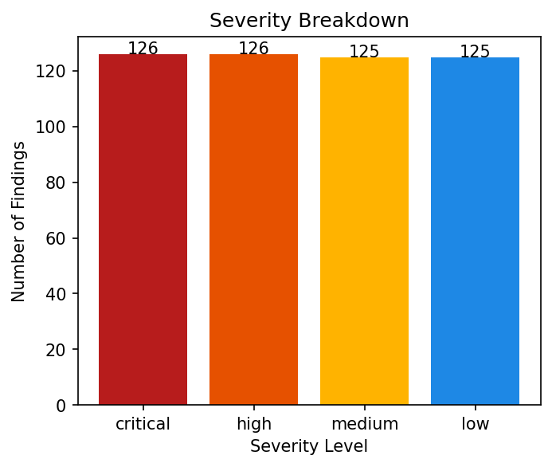
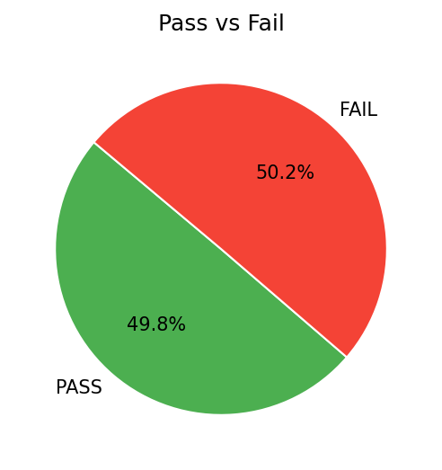
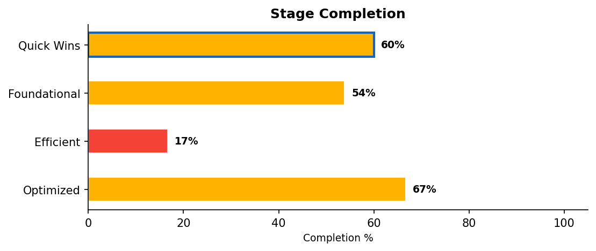
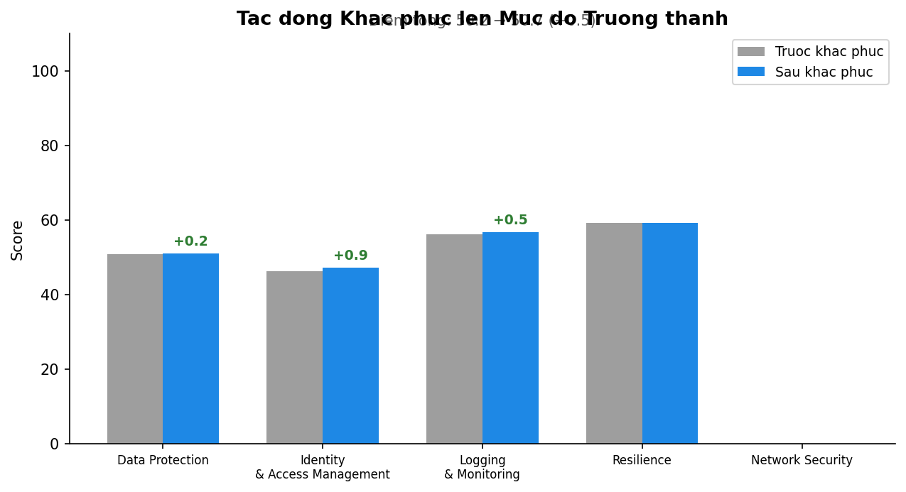

Tài khoản: 123456789012 | Vùng: ap-southeast-1
Ngày: 2026-04-15
Mã báo cáo: RPT-20260415-F50A
MẬT — Tài liệu này chứa thông tin đánh giá bảo mật nội bộ. Chỉ được phân phối cho nhân sự được ủy quyền.
Mock LLM response for visual testing.
| Thuộc tính | Chi tiết |
|---|---|
| Tài khoản AWS | 123456789012 |
| Vùng (Region) | ap-southeast-1 |
| Phạm vi quét | S3, IAM, CLOUDTRAIL |
| Công cụ | Prowler, AWS SDK (boto3), PDCA Security Agent |
Mock LLM response for visual testing.
Mock LLM response for visual testing.
Phân bổ mức độ nghiêm trọng:
|
 |
 |
Mock LLM response for visual testing.
Mock LLM response for visual testing.
Ghi chú: 250 findings không thay đổi trạng thái (PASS → PASS) đã được ẩn. Bảng dưới đây chỉ hiển thị các findings có thay đổi.
| STT | Phát hiện | Dịch vụ | Tài nguyên | Mức độ | Trước | Sau | Trạng thái |
|---|---|---|---|---|---|---|---|
| 251 | Check: Ecr Repositories Tag Immutability | logging | arn:aws:s3:::bucket-250 | MEDIUM | FAIL | PASS | Fixed |
| 252 | Check: Ecs Cluster Container Insights Enabled | logging | arn:aws:s3:::bucket-251 | LOW | FAIL | PASS | Fixed |
| 253 | Check: Ecs Service Fargate Latest Platform Version | identity | arn:aws:s3:::bucket-252 | CRITICAL | FAIL | PASS | Fixed |
| 254 | Check: Ecs Service No Assign Public Ip | data | arn:aws:s3:::bucket-253 | HIGH | FAIL | PASS | Fixed |
| 255 | Check: Ecs Task Definitions Containers Readonly Access | identity | arn:aws:s3:::bucket-254 | MEDIUM | FAIL | PASS | Fixed |
| 256 | Check: Ecs Task Definitions Host Namespace Not Shared | logging | arn:aws:s3:::bucket-255 | LOW | FAIL | PASS | Fixed |
| 257 | Check: Ecs Task Definitions Host Networking Mode Users | identity | arn:aws:s3:::bucket-256 | CRITICAL | FAIL | FAIL | Still Failing (RemediationFailed) |
| 258 | Check: Ecs Task Definitions Logging Block Mode | logging | arn:aws:s3:::bucket-257 | HIGH | FAIL | FAIL | Still Failing (RemediationFailed) |
| 259 | Check: Ecs Task Definitions Logging Enabled | logging | arn:aws:s3:::bucket-258 | MEDIUM | FAIL | FAIL | Still Failing (ManualRequired) |
| 260 | Check: Ecs Task Definitions No Environment Secrets | resilience | arn:aws:s3:::bucket-259 | LOW | FAIL | FAIL | Still Failing (RemediationFailed) |
| 261 | Check: Ecs Task Definitions No Privileged Containers | identity | arn:aws:s3:::bucket-260 | CRITICAL | FAIL | FAIL | Still Failing (RemediationFailed) |
| 262 | Check: Ecs Task Set No Assign Public Ip | data | arn:aws:s3:::bucket-261 | HIGH | FAIL | FAIL | Still Failing (ManualRequired) |
| 263 | Check: Efs Access Point Enforce Root Directory | resilience | arn:aws:s3:::bucket-262 | MEDIUM | FAIL | FAIL | Still Failing (RemediationFailed) |
| 264 | Check: Efs Access Point Enforce User Identity | identity | arn:aws:s3:::bucket-263 | LOW | FAIL | FAIL | Still Failing (RemediationFailed) |
| 265 | Check: Efs Encryption At Rest Enabled | data | arn:aws:s3:::bucket-264 | CRITICAL | FAIL | FAIL | Still Failing (ManualRequired) |
| 266 | Check: Efs Have Backup Enabled | resilience | arn:aws:s3:::bucket-265 | HIGH | FAIL | FAIL | Still Failing (RemediationFailed) |
| 267 | Check: Efs Mount Target Not Publicly Accessible | resilience | arn:aws:s3:::bucket-266 | MEDIUM | FAIL | FAIL | Still Failing (RemediationFailed) |
| 268 | Check: Efs Multi Az Enabled | resilience | arn:aws:s3:::bucket-267 | LOW | FAIL | FAIL | Still Failing (ManualRequired) |
| 269 | Check: Efs Not Publicly Accessible | data | arn:aws:s3:::bucket-268 | CRITICAL | FAIL | FAIL | Still Failing (RemediationFailed) |
| 270 | Check: Eks Cluster Deletion Protection Enabled | identity | arn:aws:s3:::bucket-269 | HIGH | FAIL | FAIL | Still Failing (RemediationFailed) |
| 271 | Check: Eks Cluster Kms Cmk Encryption In Secrets Enabled | data | arn:aws:s3:::bucket-270 | MEDIUM | FAIL | FAIL | Still Failing (ManualRequired) |
| 272 | Check: Eks Cluster Network Policy Enabled | identity | arn:aws:s3:::bucket-271 | LOW | FAIL | FAIL | Still Failing (RemediationFailed) |
| 273 | Check: Eks Cluster Not Publicly Accessible | data | arn:aws:s3:::bucket-272 | CRITICAL | FAIL | FAIL | Still Failing (RemediationFailed) |
| 274 | Check: Eks Control Plane Logging All Types Enabled | logging | arn:aws:s3:::bucket-273 | HIGH | FAIL | FAIL | Still Failing (ManualRequired) |
| 275 | Check: Elasticache Redis Cluster Automatic Failover Enabled | resilience | arn:aws:s3:::bucket-274 | MEDIUM | FAIL | FAIL | Still Failing (RemediationFailed) |
| 276 | Check: Elasticache Redis Cluster Backup Enabled | data | arn:aws:s3:::bucket-275 | LOW | FAIL | FAIL | Still Failing (RemediationFailed) |
| 277 | Check: Elasticache Redis Cluster In Transit Encryption Enabled | data | arn:aws:s3:::bucket-276 | CRITICAL | FAIL | FAIL | Still Failing (ManualRequired) |
| 278 | Check: Elasticache Redis Cluster Rest Encryption Enabled | data | arn:aws:s3:::bucket-277 | HIGH | FAIL | FAIL | Still Failing (RemediationFailed) |
| 279 | Check: Elasticbeanstalk Environment Cloudwatch Logging Enabled | logging | arn:aws:s3:::bucket-278 | MEDIUM | FAIL | FAIL | Still Failing (RemediationFailed) |
| 280 | Check: Elasticbeanstalk Environment Enhanced Health Reporting | logging | arn:aws:s3:::bucket-279 | LOW | FAIL | FAIL | Still Failing (ManualRequired) |
| 281 | Check: Elb Cross Zone Load Balancing Enabled | resilience | arn:aws:s3:::bucket-280 | CRITICAL | FAIL | FAIL | Still Failing (RemediationFailed) |
| 282 | Check: Elb Desync Mitigation Mode | logging | arn:aws:s3:::bucket-281 | HIGH | FAIL | FAIL | Still Failing (RemediationFailed) |
| 283 | Check: Elb Insecure Ssl Ciphers | data | arn:aws:s3:::bucket-282 | MEDIUM | FAIL | FAIL | Still Failing (ManualRequired) |
| 284 | Check: Elb Internet Facing | data | arn:aws:s3:::bucket-283 | LOW | FAIL | FAIL | Still Failing (RemediationFailed) |
| 285 | Check: Elb Is In Multiple Az | resilience | arn:aws:s3:::bucket-284 | CRITICAL | FAIL | FAIL | Still Failing (RemediationFailed) |
| 286 | Check: Elb Logging Enabled | logging | arn:aws:s3:::bucket-285 | HIGH | FAIL | FAIL | Still Failing (ManualRequired) |
| 287 | Check: Elb Ssl Listeners | data | arn:aws:s3:::bucket-286 | MEDIUM | FAIL | FAIL | Still Failing (RemediationFailed) |
| 288 | Check: Elb Ssl Listeners Use Acm Certificate | data | arn:aws:s3:::bucket-287 | LOW | FAIL | FAIL | Still Failing (RemediationFailed) |
| 289 | Check: Elbv2 Cross Zone Load Balancing Enabled | resilience | arn:aws:s3:::bucket-288 | CRITICAL | FAIL | FAIL | Still Failing (ManualRequired) |
| 290 | Check: Elbv2 Insecure Ssl Ciphers | data | arn:aws:s3:::bucket-289 | HIGH | FAIL | FAIL | Still Failing (RemediationFailed) |
| 291 | Check: Elbv2 Internet Facing | data | arn:aws:s3:::bucket-290 | MEDIUM | FAIL | FAIL | Still Failing (RemediationFailed) |
| 292 | Check: Elbv2 Is In Multiple Az | resilience | arn:aws:s3:::bucket-291 | LOW | FAIL | FAIL | Still Failing (ManualRequired) |
| 293 | Check: Elbv2 Logging Enabled | logging | arn:aws:s3:::bucket-292 | CRITICAL | FAIL | FAIL | Still Failing (RemediationFailed) |
| 294 | Check: Elbv2 Nlb Tls Termination Enabled | data | arn:aws:s3:::bucket-293 | HIGH | FAIL | FAIL | Still Failing (RemediationFailed) |
| 295 | Check: Elbv2 Ssl Listeners | data | arn:aws:s3:::bucket-294 | MEDIUM | FAIL | FAIL | Still Failing (ManualRequired) |
| 296 | Check: Elbv2 Waf Acl Attached | identity | arn:aws:s3:::bucket-295 | LOW | FAIL | FAIL | Still Failing (RemediationFailed) |
| 297 | Check: Emr Cluster Account Public Block Enabled | data | arn:aws:s3:::bucket-296 | CRITICAL | FAIL | FAIL | Still Failing (RemediationFailed) |
| 298 | Check: Emr Cluster Publicly Accesible | data | arn:aws:s3:::bucket-297 | HIGH | FAIL | FAIL | Still Failing (ManualRequired) |
| 299 | Check: Eventbridge Schema Registry Cross Account Access | data | arn:aws:s3:::bucket-298 | MEDIUM | FAIL | FAIL | Still Failing (RemediationFailed) |
| 300 | Check: Firehose Stream Encrypted At Rest | data | arn:aws:s3:::bucket-299 | LOW | FAIL | FAIL | Still Failing (RemediationFailed) |
| 301 | Check: Fsx File System Copy Tags To Backups Enabled | logging | arn:aws:s3:::bucket-300 | CRITICAL | FAIL | FAIL | Still Failing (ManualRequired) |
| 302 | Check: Fsx File System Copy Tags To Volumes Enabled | logging | arn:aws:s3:::bucket-301 | HIGH | FAIL | FAIL | Still Failing (RemediationFailed) |
| 303 | Check: Fsx Windows File System Multi Az Enabled | resilience | arn:aws:s3:::bucket-302 | MEDIUM | FAIL | FAIL | Still Failing (RemediationFailed) |
| 304 | Check: Glue Data Catalogs Connection Passwords Encryption Enabled | data | arn:aws:s3:::bucket-303 | LOW | FAIL | FAIL | Still Failing (ManualRequired) |
| 305 | Check: Glue Data Catalogs Metadata Encryption Enabled | data | arn:aws:s3:::bucket-304 | CRITICAL | FAIL | FAIL | Still Failing (RemediationFailed) |
| 306 | Check: Glue Data Catalogs Not Publicly Accessible | data | arn:aws:s3:::bucket-305 | HIGH | FAIL | FAIL | Still Failing (RemediationFailed) |
| 307 | Check: Glue Database Connections Ssl Enabled | data | arn:aws:s3:::bucket-306 | MEDIUM | FAIL | FAIL | Still Failing (ManualRequired) |
| 308 | Check: Glue Development Endpoints Cloudwatch Logs Encryption Enabled | logging | arn:aws:s3:::bucket-307 | LOW | FAIL | FAIL | Still Failing (RemediationFailed) |
| 309 | Check: Glue Development Endpoints Job Bookmark Encryption Enabled | data | arn:aws:s3:::bucket-308 | CRITICAL | FAIL | FAIL | Still Failing (RemediationFailed) |
| 310 | Check: Glue Development Endpoints S3 Encryption Enabled | identity | arn:aws:s3:::bucket-309 | HIGH | FAIL | FAIL | Still Failing (ManualRequired) |
| 311 | Check: Glue Etl Jobs Amazon S3 Encryption Enabled | data | arn:aws:s3:::bucket-310 | MEDIUM | FAIL | FAIL | Still Failing (RemediationFailed) |
| 312 | Check: Glue Etl Jobs Cloudwatch Logs Encryption Enabled | logging | arn:aws:s3:::bucket-311 | LOW | FAIL | FAIL | Still Failing (RemediationFailed) |
| 313 | Check: Glue Etl Jobs Job Bookmark Encryption Enabled | logging | arn:aws:s3:::bucket-312 | CRITICAL | FAIL | FAIL | Still Failing (ManualRequired) |
| 314 | Check: Glue Etl Jobs Logging Enabled | logging | arn:aws:s3:::bucket-313 | HIGH | FAIL | FAIL | Still Failing (RemediationFailed) |
| 315 | Check: Glue Ml Transform Encrypted At Rest | data | arn:aws:s3:::bucket-314 | MEDIUM | FAIL | FAIL | Still Failing (RemediationFailed) |
| 316 | Check: Guardduty Centrally Managed | logging | arn:aws:s3:::bucket-315 | LOW | FAIL | FAIL | Still Failing (ManualRequired) |
| 317 | Check: Guardduty Ec2 Malware Protection Enabled | logging | arn:aws:s3:::bucket-316 | CRITICAL | FAIL | FAIL | Still Failing (RemediationFailed) |
| 318 | Check: Guardduty Eks Audit Log Enabled | logging | arn:aws:s3:::bucket-317 | HIGH | FAIL | FAIL | Still Failing (RemediationFailed) |
| 319 | Check: Guardduty Eks Runtime Monitoring Enabled | logging | arn:aws:s3:::bucket-318 | MEDIUM | FAIL | FAIL | Still Failing (ManualRequired) |
| 320 | Check: Guardduty Is Enabled | logging | arn:aws:s3:::bucket-319 | LOW | FAIL | FAIL | Still Failing (RemediationFailed) |
| 321 | Check: Guardduty Lambda Protection Enabled | logging | arn:aws:s3:::bucket-320 | CRITICAL | FAIL | FAIL | Still Failing (RemediationFailed) |
| 322 | Check: Guardduty No High Severity Findings | logging | arn:aws:s3:::bucket-321 | HIGH | FAIL | FAIL | Still Failing (ManualRequired) |
| 323 | Check: Guardduty Rds Protection Enabled | logging | arn:aws:s3:::bucket-322 | MEDIUM | FAIL | FAIL | Still Failing (RemediationFailed) |
| 324 | Check: Guardduty S3 Protection Enabled | logging | arn:aws:s3:::bucket-323 | LOW | FAIL | FAIL | Still Failing (RemediationFailed) |
| 325 | Check: Iam Administrator Access With Mfa | identity | arn:aws:s3:::bucket-324 | CRITICAL | FAIL | FAIL | Still Failing (ManualRequired) |
| 326 | Check: Iam Avoid Root Usage | identity | arn:aws:s3:::bucket-325 | HIGH | FAIL | FAIL | Still Failing (RemediationFailed) |
| 327 | Check: Iam Aws Attached Policy No Administrative Privileges | identity | arn:aws:s3:::bucket-326 | MEDIUM | FAIL | FAIL | Still Failing (RemediationFailed) |
| 328 | Check: Iam Check Saml Providers Sts | identity | arn:aws:s3:::bucket-327 | LOW | FAIL | FAIL | Still Failing (ManualRequired) |
| 329 | Check: Iam Customer Attached Policy No Administrative Privileges | identity | arn:aws:s3:::bucket-328 | CRITICAL | FAIL | FAIL | Still Failing (RemediationFailed) |
| 330 | Check: Iam Customer Unattached Policy No Administrative Privileges | identity | arn:aws:s3:::bucket-329 | HIGH | FAIL | FAIL | Still Failing (RemediationFailed) |
| 331 | Check: Iam Group Administrator Access Policy | identity | arn:aws:s3:::bucket-330 | MEDIUM | FAIL | FAIL | Still Failing (ManualRequired) |
| 332 | Check: Iam Inline Policy Allows Privilege Escalation | identity | arn:aws:s3:::bucket-331 | LOW | FAIL | FAIL | Still Failing (RemediationFailed) |
| 333 | Check: Iam Inline Policy No Administrative Privileges | identity | arn:aws:s3:::bucket-332 | CRITICAL | FAIL | FAIL | Still Failing (RemediationFailed) |
| 334 | Check: Iam Inline Policy No Full Access To Cloudtrail | identity | arn:aws:s3:::bucket-333 | HIGH | FAIL | FAIL | Still Failing (ManualRequired) |
| 335 | Check: Iam Inline Policy No Full Access To Kms | identity | arn:aws:s3:::bucket-334 | MEDIUM | FAIL | FAIL | Still Failing (RemediationFailed) |
| 336 | Check: Iam No Custom Policy Permissive Role Assumption | identity | arn:aws:s3:::bucket-335 | LOW | FAIL | FAIL | Still Failing (RemediationFailed) |
| 337 | Check: Iam No Expired Server Certificates Stored | identity | arn:aws:s3:::bucket-336 | CRITICAL | FAIL | FAIL | Still Failing (ManualRequired) |
| 338 | Check: Iam No Root Access Key | identity | arn:aws:s3:::bucket-337 | HIGH | FAIL | FAIL | Still Failing (RemediationFailed) |
| 339 | Check: Iam Password Policy Expires Passwords Within 90 Days Or Less | identity | arn:aws:s3:::bucket-338 | MEDIUM | FAIL | FAIL | Still Failing (RemediationFailed) |
| 340 | Check: Iam Password Policy Lowercase | identity | arn:aws:s3:::bucket-339 | LOW | FAIL | FAIL | Still Failing (ManualRequired) |
| 341 | Check: Iam Password Policy Minimum Length 14 | identity | arn:aws:s3:::bucket-340 | CRITICAL | FAIL | FAIL | Still Failing (RemediationFailed) |
| 342 | Check: Iam Password Policy Number | identity | arn:aws:s3:::bucket-341 | HIGH | FAIL | FAIL | Still Failing (RemediationFailed) |
| 343 | Check: Iam Password Policy Reuse 24 | identity | arn:aws:s3:::bucket-342 | MEDIUM | FAIL | FAIL | Still Failing (ManualRequired) |
| 344 | Check: Iam Password Policy Symbol | identity | arn:aws:s3:::bucket-343 | LOW | FAIL | FAIL | Still Failing (RemediationFailed) |
| 345 | Check: Iam Password Policy Uppercase | identity | arn:aws:s3:::bucket-344 | CRITICAL | FAIL | FAIL | Still Failing (RemediationFailed) |
| 346 | Check: Iam Policy Allows Privilege Escalation | identity | arn:aws:s3:::bucket-345 | HIGH | FAIL | FAIL | Still Failing (ManualRequired) |
| 347 | Check: Iam Policy Attached Only To Group Or Roles | identity | arn:aws:s3:::bucket-346 | MEDIUM | FAIL | FAIL | Still Failing (RemediationFailed) |
| 348 | Check: Iam Policy Cloudshell Admin Not Attached | identity | arn:aws:s3:::bucket-347 | LOW | FAIL | FAIL | Still Failing (RemediationFailed) |
| 349 | Check: Iam Policy No Full Access To Cloudtrail | identity | arn:aws:s3:::bucket-348 | CRITICAL | FAIL | FAIL | Still Failing (ManualRequired) |
| 350 | Check: Iam Policy No Full Access To Kms | identity | arn:aws:s3:::bucket-349 | HIGH | FAIL | FAIL | Still Failing (RemediationFailed) |
| 351 | Check: Iam Role Administratoraccess Policy | identity | arn:aws:s3:::bucket-350 | MEDIUM | FAIL | FAIL | Still Failing (RemediationFailed) |
| 352 | Check: Iam Role Cross Account Readonlyaccess Policy | identity | arn:aws:s3:::bucket-351 | LOW | FAIL | FAIL | Still Failing (ManualRequired) |
| 353 | Check: Iam Role Cross Service Confused Deputy Prevention | identity | arn:aws:s3:::bucket-352 | CRITICAL | FAIL | FAIL | Still Failing (RemediationFailed) |
| 354 | Check: Iam Root Credentials Management Enabled | identity | arn:aws:s3:::bucket-353 | HIGH | FAIL | FAIL | Still Failing (RemediationFailed) |
| 355 | Check: Iam Root Hardware Mfa Enabled | identity | arn:aws:s3:::bucket-354 | MEDIUM | FAIL | FAIL | Still Failing (ManualRequired) |
| 356 | Check: Iam Root Mfa Enabled | identity | arn:aws:s3:::bucket-355 | LOW | FAIL | FAIL | Still Failing (RemediationFailed) |
| 357 | Check: Iam Rotate Access Key 90 Days | identity | arn:aws:s3:::bucket-356 | CRITICAL | FAIL | FAIL | Still Failing (RemediationFailed) |
| 358 | Check: Iam Securityaudit Role Created | identity | arn:aws:s3:::bucket-357 | HIGH | FAIL | FAIL | Still Failing (ManualRequired) |
| 359 | Check: Iam Support Role Created | identity | arn:aws:s3:::bucket-358 | MEDIUM | FAIL | FAIL | Still Failing (RemediationFailed) |
| 360 | Check: Iam User Accesskey Unused | identity | arn:aws:s3:::bucket-359 | LOW | FAIL | FAIL | Still Failing (RemediationFailed) |
| 361 | Check: Iam User Administrator Access Policy | identity | arn:aws:s3:::bucket-360 | CRITICAL | FAIL | FAIL | Still Failing (ManualRequired) |
| 362 | Check: Iam User Console Access Unused | identity | arn:aws:s3:::bucket-361 | HIGH | FAIL | FAIL | Still Failing (RemediationFailed) |
| 363 | Check: Iam User Hardware Mfa Enabled | identity | arn:aws:s3:::bucket-362 | MEDIUM | FAIL | FAIL | Still Failing (RemediationFailed) |
| 364 | Check: Iam User Mfa Enabled Console Access | identity | arn:aws:s3:::bucket-363 | LOW | FAIL | FAIL | Still Failing (ManualRequired) |
| 365 | Check: Iam User No Setup Initial Access Key | identity | arn:aws:s3:::bucket-364 | CRITICAL | FAIL | FAIL | Still Failing (RemediationFailed) |
| 366 | Check: Iam User Two Active Access Key | identity | arn:aws:s3:::bucket-365 | HIGH | FAIL | FAIL | Still Failing (RemediationFailed) |
| 367 | Check: Iam User With Temporary Credentials | identity | arn:aws:s3:::bucket-366 | MEDIUM | FAIL | FAIL | Still Failing (ManualRequired) |
| 368 | Check: Inspector2 Active Findings Exist | logging | arn:aws:s3:::bucket-367 | LOW | FAIL | FAIL | Still Failing (RemediationFailed) |
| 369 | Check: Inspector2 Is Enabled | resilience | arn:aws:s3:::bucket-368 | CRITICAL | FAIL | FAIL | Still Failing (RemediationFailed) |
| 370 | Check: Kafka Cluster Encryption At Rest Uses Cmk | data | arn:aws:s3:::bucket-369 | HIGH | FAIL | FAIL | Still Failing (ManualRequired) |
| 371 | Check: Kafka Cluster Enhanced Monitoring Enabled | logging | arn:aws:s3:::bucket-370 | MEDIUM | FAIL | FAIL | Still Failing (RemediationFailed) |
| 372 | Check: Kafka Cluster In Transit Encryption Enabled | data | arn:aws:s3:::bucket-371 | LOW | FAIL | FAIL | Still Failing (RemediationFailed) |
| 373 | Check: Kafka Cluster Is Public | data | arn:aws:s3:::bucket-372 | CRITICAL | FAIL | FAIL | Still Failing (ManualRequired) |
| 374 | Check: Kafka Connector In Transit Encryption Enabled | data | arn:aws:s3:::bucket-373 | HIGH | FAIL | FAIL | Still Failing (RemediationFailed) |
| 375 | Check: Kinesis Stream Data Retention Period | logging | arn:aws:s3:::bucket-374 | MEDIUM | FAIL | FAIL | Still Failing (RemediationFailed) |
| 376 | Check: Kinesis Stream Encrypted At Rest | data | arn:aws:s3:::bucket-375 | LOW | FAIL | FAIL | Still Failing (ManualRequired) |
| 377 | Check: Kms Cmk Are Used | data | arn:aws:s3:::bucket-376 | CRITICAL | FAIL | FAIL | Still Failing (RemediationFailed) |
| 378 | Check: Kms Cmk Not Deleted Unintentionally | data | arn:aws:s3:::bucket-377 | HIGH | FAIL | FAIL | Still Failing (RemediationFailed) |
| 379 | Check: Kms Cmk Not Multi Region | data | arn:aws:s3:::bucket-378 | MEDIUM | FAIL | FAIL | Still Failing (ManualRequired) |
| 380 | Check: Kms Cmk Rotation Enabled | data | arn:aws:s3:::bucket-379 | LOW | FAIL | FAIL | Still Failing (RemediationFailed) |
| 381 | Check: Kms Key Not Publicly Accessible | data | arn:aws:s3:::bucket-380 | CRITICAL | FAIL | FAIL | Still Failing (RemediationFailed) |
| 382 | Check: Lightsail Instance Automated Snapshots | resilience | arn:aws:s3:::bucket-381 | HIGH | FAIL | FAIL | Still Failing (ManualRequired) |
| 383 | Check: Lightsail Instance Public | data | arn:aws:s3:::bucket-382 | MEDIUM | FAIL | FAIL | Still Failing (RemediationFailed) |
| 384 | Check: Macie Automated Sensitive Data Discovery Enabled | identity | arn:aws:s3:::bucket-383 | LOW | FAIL | FAIL | Still Failing (RemediationFailed) |
| 385 | Check: Macie Is Enabled | identity | arn:aws:s3:::bucket-384 | CRITICAL | FAIL | FAIL | Still Failing (ManualRequired) |
| 386 | Check: Mq Broker Active Deployment Mode | resilience | arn:aws:s3:::bucket-385 | HIGH | FAIL | FAIL | Still Failing (RemediationFailed) |
| 387 | Check: Mq Broker Cluster Deployment Mode | resilience | arn:aws:s3:::bucket-386 | MEDIUM | FAIL | FAIL | Still Failing (RemediationFailed) |
| 388 | Check: Mq Broker Logging Enabled | logging | arn:aws:s3:::bucket-387 | LOW | FAIL | FAIL | Still Failing (ManualRequired) |
| 389 | Check: Mq Broker Not Publicly Accessible | data | arn:aws:s3:::bucket-388 | CRITICAL | FAIL | FAIL | Still Failing (RemediationFailed) |
| 390 | Check: Neptune Cluster Backup Enabled | resilience | arn:aws:s3:::bucket-389 | HIGH | FAIL | FAIL | Still Failing (RemediationFailed) |
| 391 | Check: Neptune Cluster Copy Tags To Snapshots | resilience | arn:aws:s3:::bucket-390 | MEDIUM | FAIL | FAIL | Still Failing (ManualRequired) |
| 392 | Check: Neptune Cluster Deletion Protection | resilience | arn:aws:s3:::bucket-391 | LOW | FAIL | FAIL | Still Failing (RemediationFailed) |
| 393 | Check: Neptune Cluster Iam Authentication Enabled | logging | arn:aws:s3:::bucket-392 | CRITICAL | FAIL | FAIL | Still Failing (RemediationFailed) |
| 394 | Check: Neptune Cluster Integration Cloudwatch Logs | logging | arn:aws:s3:::bucket-393 | HIGH | FAIL | FAIL | Still Failing (ManualRequired) |
| 395 | Check: Neptune Cluster Multi Az | resilience | arn:aws:s3:::bucket-394 | MEDIUM | FAIL | FAIL | Still Failing (RemediationFailed) |
| 396 | Check: Neptune Cluster Public Snapshot | identity | arn:aws:s3:::bucket-395 | LOW | FAIL | FAIL | Still Failing (RemediationFailed) |
| 397 | Check: Neptune Cluster Snapshot Encrypted | data | arn:aws:s3:::bucket-396 | CRITICAL | FAIL | FAIL | Still Failing (ManualRequired) |
| 398 | Check: Neptune Cluster Storage Encrypted | data | arn:aws:s3:::bucket-397 | HIGH | FAIL | FAIL | Still Failing (RemediationFailed) |
| 399 | Check: Neptune Cluster Uses Public Subnet | data | arn:aws:s3:::bucket-398 | MEDIUM | FAIL | FAIL | Still Failing (RemediationFailed) |
| 400 | Check: Networkfirewall Deletion Protection | logging | arn:aws:s3:::bucket-399 | LOW | FAIL | FAIL | Still Failing (ManualRequired) |
| 401 | Check: Networkfirewall In All Vpc | logging | arn:aws:s3:::bucket-400 | CRITICAL | FAIL | FAIL | Still Failing (RemediationFailed) |
| 402 | Check: Networkfirewall Logging Enabled | logging | arn:aws:s3:::bucket-401 | HIGH | FAIL | FAIL | Still Failing (RemediationFailed) |
| 403 | Check: Networkfirewall Multi Az | resilience | arn:aws:s3:::bucket-402 | MEDIUM | FAIL | FAIL | Still Failing (ManualRequired) |
| 404 | Check: Networkfirewall Policy Rule Group Associated | identity | arn:aws:s3:::bucket-403 | LOW | FAIL | FAIL | Still Failing (RemediationFailed) |
| 405 | Check: Opensearch Service Domains Access Control Enabled | identity | arn:aws:s3:::bucket-404 | CRITICAL | FAIL | FAIL | Still Failing (RemediationFailed) |
| 406 | Check: Opensearch Service Domains Audit Logging Enabled | logging | arn:aws:s3:::bucket-405 | HIGH | FAIL | FAIL | Still Failing (ManualRequired) |
| 407 | Check: Opensearch Service Domains Cloudwatch Logging Enabled | logging | arn:aws:s3:::bucket-406 | MEDIUM | FAIL | FAIL | Still Failing (RemediationFailed) |
| 408 | Check: Opensearch Service Domains Encryption At Rest Enabled | data | arn:aws:s3:::bucket-407 | LOW | FAIL | FAIL | Still Failing (RemediationFailed) |
| 409 | Check: Opensearch Service Domains Fault Tolerant Data Nodes | resilience | arn:aws:s3:::bucket-408 | CRITICAL | FAIL | FAIL | Still Failing (ManualRequired) |
| 410 | Check: Opensearch Service Domains Fault Tolerant Master Nodes | resilience | arn:aws:s3:::bucket-409 | HIGH | FAIL | FAIL | Still Failing (RemediationFailed) |
| 411 | Check: Opensearch Service Domains Https Communications Enforced | data | arn:aws:s3:::bucket-410 | MEDIUM | FAIL | FAIL | Still Failing (RemediationFailed) |
| 412 | Check: Opensearch Service Domains Node To Node Encryption Enabled | data | arn:aws:s3:::bucket-411 | LOW | FAIL | FAIL | Still Failing (ManualRequired) |
| 413 | Check: Opensearch Service Domains Not Publicly Accessible | data | arn:aws:s3:::bucket-412 | CRITICAL | FAIL | FAIL | Still Failing (RemediationFailed) |
| 414 | Check: Opensearch Service Domains Updated To The Latest Service Software Version | logging | arn:aws:s3:::bucket-413 | HIGH | FAIL | FAIL | Still Failing (RemediationFailed) |
| 415 | Check: Opensearch Service Domains Use Cognito Authentication For Kibana | logging | arn:aws:s3:::bucket-414 | MEDIUM | FAIL | FAIL | Still Failing (ManualRequired) |
| 416 | Check: Organizations Account Part Of Organizations | logging | arn:aws:s3:::bucket-415 | LOW | FAIL | FAIL | Still Failing (RemediationFailed) |
| 417 | Check: Organizations Delegated Administrators | logging | arn:aws:s3:::bucket-416 | CRITICAL | FAIL | FAIL | Still Failing (RemediationFailed) |
| 418 | Check: Organizations Opt Out Ai Services Policy | logging | arn:aws:s3:::bucket-417 | HIGH | FAIL | FAIL | Still Failing (ManualRequired) |
| 419 | Check: Organizations Scp Check Deny Regions | logging | arn:aws:s3:::bucket-418 | MEDIUM | FAIL | FAIL | Still Failing (RemediationFailed) |
| 420 | Check: Organizations Tags Policies Enabled And Attached | logging | arn:aws:s3:::bucket-419 | LOW | FAIL | FAIL | Still Failing (RemediationFailed) |
| 421 | Check: Rds Cluster Backtrack Enabled | resilience | arn:aws:s3:::bucket-420 | CRITICAL | FAIL | FAIL | Still Failing (ManualRequired) |
| 422 | Check: Rds Cluster Copy Tags To Snapshots | resilience | arn:aws:s3:::bucket-421 | HIGH | FAIL | FAIL | Still Failing (RemediationFailed) |
| 423 | Check: Rds Cluster Critical Event Subscription | logging | arn:aws:s3:::bucket-422 | MEDIUM | FAIL | FAIL | Still Failing (RemediationFailed) |
| 424 | Check: Rds Cluster Iam Authentication Enabled | identity | arn:aws:s3:::bucket-423 | LOW | FAIL | FAIL | Still Failing (ManualRequired) |
| 425 | Check: Rds Cluster Integration Cloudwatch Logs | logging | arn:aws:s3:::bucket-424 | CRITICAL | FAIL | FAIL | Still Failing (RemediationFailed) |
| 426 | Check: Rds Cluster Minor Version Upgrade Enabled | logging | arn:aws:s3:::bucket-425 | HIGH | FAIL | FAIL | Still Failing (RemediationFailed) |
| 427 | Check: Rds Cluster Multi Az | resilience | arn:aws:s3:::bucket-426 | MEDIUM | FAIL | FAIL | Still Failing (ManualRequired) |
| 428 | Check: Rds Cluster Non Default Port | identity | arn:aws:s3:::bucket-427 | LOW | FAIL | FAIL | Still Failing (RemediationFailed) |
| 429 | Check: Rds Cluster Storage Encrypted | data | arn:aws:s3:::bucket-428 | CRITICAL | FAIL | FAIL | Still Failing (RemediationFailed) |
| 430 | Check: Rds Instance Certificate Expiration | data | arn:aws:s3:::bucket-429 | HIGH | FAIL | FAIL | Still Failing (ManualRequired) |
| 431 | Check: Rds Instance Copy Tags To Snapshots | resilience | arn:aws:s3:::bucket-430 | MEDIUM | FAIL | FAIL | Still Failing (RemediationFailed) |
| 432 | Check: Rds Instance Critical Event Subscription | logging | arn:aws:s3:::bucket-431 | LOW | FAIL | FAIL | Still Failing (RemediationFailed) |
| 433 | Check: Rds Instance Enhanced Monitoring Enabled | logging | arn:aws:s3:::bucket-432 | CRITICAL | FAIL | FAIL | Still Failing (ManualRequired) |
| 434 | Check: Rds Instance Event Subscription Parameter Groups | resilience | arn:aws:s3:::bucket-433 | HIGH | FAIL | FAIL | Still Failing (RemediationFailed) |
| 435 | Check: Rds Instance Event Subscription Security Groups | resilience | arn:aws:s3:::bucket-434 | MEDIUM | FAIL | FAIL | Still Failing (RemediationFailed) |
| 436 | Check: Rds Instance Iam Authentication Enabled | identity | arn:aws:s3:::bucket-435 | LOW | FAIL | FAIL | Still Failing (ManualRequired) |
| 437 | Check: Rds Instance Inside Vpc | identity | arn:aws:s3:::bucket-436 | CRITICAL | FAIL | FAIL | Still Failing (RemediationFailed) |
| 438 | Check: Rds Instance Integration Cloudwatch Logs | logging | arn:aws:s3:::bucket-437 | HIGH | FAIL | FAIL | Still Failing (RemediationFailed) |
| 439 | Check: Rds Instance Minor Version Upgrade Enabled | logging | arn:aws:s3:::bucket-438 | MEDIUM | FAIL | FAIL | Still Failing (ManualRequired) |
| 440 | Check: Rds Instance Multi Az | resilience | arn:aws:s3:::bucket-439 | LOW | FAIL | FAIL | Still Failing (RemediationFailed) |
| 441 | Check: Rds Instance No Public Access | data | arn:aws:s3:::bucket-440 | CRITICAL | FAIL | FAIL | Still Failing (RemediationFailed) |
| 442 | Check: Rds Instance Non Default Port | identity | arn:aws:s3:::bucket-441 | HIGH | FAIL | FAIL | Still Failing (ManualRequired) |
| 443 | Check: Rds Instance Storage Encrypted | data | arn:aws:s3:::bucket-442 | MEDIUM | FAIL | FAIL | Still Failing (RemediationFailed) |
| 444 | Check: Rds Instance Transport Encrypted | data | arn:aws:s3:::bucket-443 | LOW | FAIL | FAIL | Still Failing (RemediationFailed) |
| 445 | Check: Rds Snapshots Encrypted | data | arn:aws:s3:::bucket-444 | CRITICAL | FAIL | FAIL | Still Failing (ManualRequired) |
| 446 | Check: Rds Snapshots Public Access | data | arn:aws:s3:::bucket-445 | HIGH | FAIL | FAIL | Still Failing (RemediationFailed) |
| 447 | Check: Redshift Cluster Audit Logging | logging | arn:aws:s3:::bucket-446 | MEDIUM | FAIL | FAIL | Still Failing (RemediationFailed) |
| 448 | Check: Redshift Cluster Encrypted At Rest | data | arn:aws:s3:::bucket-447 | LOW | FAIL | FAIL | Still Failing (ManualRequired) |
| 449 | Check: Redshift Cluster Enhanced Vpc Routing | identity | arn:aws:s3:::bucket-448 | CRITICAL | FAIL | FAIL | Still Failing (RemediationFailed) |
| 450 | Check: Redshift Cluster In Transit Encryption Enabled | data | arn:aws:s3:::bucket-449 | HIGH | FAIL | FAIL | Still Failing (RemediationFailed) |
| 451 | Check: Redshift Cluster Multi Az Enabled | resilience | arn:aws:s3:::bucket-450 | MEDIUM | FAIL | FAIL | Still Failing (ManualRequired) |
| 452 | Check: Redshift Cluster Non Default Database Name | identity | arn:aws:s3:::bucket-451 | LOW | FAIL | FAIL | Still Failing (RemediationFailed) |
| 453 | Check: Redshift Cluster Non Default Username | identity | arn:aws:s3:::bucket-452 | CRITICAL | FAIL | FAIL | Still Failing (RemediationFailed) |
| 454 | Check: Redshift Cluster Public Access | data | arn:aws:s3:::bucket-453 | HIGH | FAIL | FAIL | Still Failing (ManualRequired) |
| 455 | Check: Route53 Dangling Ip Subdomain Takeover | identity | arn:aws:s3:::bucket-454 | MEDIUM | FAIL | FAIL | Still Failing (RemediationFailed) |
| 456 | Check: Route53 Public Hosted Zones Cloudwatch Logging Enabled | logging | arn:aws:s3:::bucket-455 | LOW | FAIL | FAIL | Still Failing (RemediationFailed) |
| 457 | Check: Sagemaker Endpoint Config Prod Variant Instances | resilience | arn:aws:s3:::bucket-456 | CRITICAL | FAIL | FAIL | Still Failing (ManualRequired) |
| 458 | Check: Sagemaker Notebook Instance Encryption Enabled | data | arn:aws:s3:::bucket-457 | HIGH | FAIL | FAIL | Still Failing (RemediationFailed) |
| 459 | Check: Sagemaker Notebook Instance Root Access Disabled | identity | arn:aws:s3:::bucket-458 | MEDIUM | FAIL | FAIL | Still Failing (RemediationFailed) |
| 460 | Check: Sagemaker Training Jobs Intercontainer Encryption Enabled | data | arn:aws:s3:::bucket-459 | LOW | FAIL | FAIL | Still Failing (ManualRequired) |
| 461 | Check: Sagemaker Training Jobs Volume And Output Encryption Enabled | identity | arn:aws:s3:::bucket-460 | CRITICAL | FAIL | FAIL | Still Failing (RemediationFailed) |
| 462 | Check: Secretsmanager Automatic Rotation Enabled | logging | arn:aws:s3:::bucket-461 | HIGH | FAIL | FAIL | Still Failing (RemediationFailed) |
| 463 | Check: Secretsmanager Not Publicly Accessible | data | arn:aws:s3:::bucket-462 | MEDIUM | FAIL | FAIL | Still Failing (ManualRequired) |
| 464 | Check: Secretsmanager Secret Rotated Periodically | resilience | arn:aws:s3:::bucket-463 | LOW | FAIL | FAIL | Still Failing (RemediationFailed) |
| 465 | Check: Securityhub Enabled | logging | arn:aws:s3:::bucket-464 | CRITICAL | FAIL | FAIL | Still Failing (RemediationFailed) |
| 466 | Check: Servicecatalog Portfolio Shared Within Organization Only | logging | arn:aws:s3:::bucket-465 | HIGH | FAIL | FAIL | Still Failing (ManualRequired) |
| 467 | Check: Ses Identity Not Publicly Accessible | data | arn:aws:s3:::bucket-466 | MEDIUM | FAIL | FAIL | Still Failing (RemediationFailed) |
| 468 | Check: Shield Advanced Protection In Associated Elastic Ips | network | arn:aws:s3:::bucket-467 | LOW | FAIL | FAIL | Still Failing (RemediationFailed) |
| 469 | Check: Shield Advanced Protection In Classic Load Balancers | network | arn:aws:s3:::bucket-468 | CRITICAL | FAIL | FAIL | Still Failing (ManualRequired) |
| 470 | Check: Shield Advanced Protection In Cloudfront Distributions | network | arn:aws:s3:::bucket-469 | HIGH | FAIL | FAIL | Still Failing (RemediationFailed) |
| 471 | Check: Shield Advanced Protection In Global Accelerators | network | arn:aws:s3:::bucket-470 | MEDIUM | FAIL | FAIL | Still Failing (RemediationFailed) |
| 472 | Check: Shield Advanced Protection In Internet Facing Load Balancers | network | arn:aws:s3:::bucket-471 | LOW | FAIL | FAIL | Still Failing (ManualRequired) |
| 473 | Check: Shield Advanced Protection In Route53 Hosted Zones | network | arn:aws:s3:::bucket-472 | CRITICAL | FAIL | FAIL | Still Failing (RemediationFailed) |
| 474 | Check: Sns Subscription Not Using Http Endpoints | data | arn:aws:s3:::bucket-473 | HIGH | FAIL | FAIL | Still Failing (RemediationFailed) |
| 475 | Check: Sns Topics Kms Encryption At Rest Enabled | data | arn:aws:s3:::bucket-474 | MEDIUM | FAIL | FAIL | Still Failing (ManualRequired) |
| 476 | Check: Sns Topics Not Publicly Accessible | data | arn:aws:s3:::bucket-475 | LOW | FAIL | FAIL | Still Failing (RemediationFailed) |
| 477 | Check: Sqs Queues Not Publicly Accessible | identity | arn:aws:s3:::bucket-476 | CRITICAL | FAIL | FAIL | Still Failing (RemediationFailed) |
| 478 | Check: Sqs Queues Server Side Encryption Enabled | data | arn:aws:s3:::bucket-477 | HIGH | FAIL | FAIL | Still Failing (ManualRequired) |
| 479 | Check: Ssm Document Secrets | logging | arn:aws:s3:::bucket-478 | MEDIUM | FAIL | FAIL | Still Failing (RemediationFailed) |
| 480 | Check: Ssmincidents Enabled With Plans | logging | arn:aws:s3:::bucket-479 | LOW | FAIL | FAIL | Still Failing (RemediationFailed) |
| 481 | Check: Stepfunctions Statemachine Logging Enabled | logging | arn:aws:s3:::bucket-480 | CRITICAL | FAIL | FAIL | Still Failing (ManualRequired) |
| 482 | Check: Storagegateway Fileshare Encryption Enabled | data | arn:aws:s3:::bucket-481 | HIGH | FAIL | FAIL | Still Failing (RemediationFailed) |
| 483 | Check: Storagegateway Gateway Fault Tolerant | resilience | arn:aws:s3:::bucket-482 | MEDIUM | FAIL | FAIL | Still Failing (RemediationFailed) |
| 484 | Check: Transfer Server In Transit Encryption Enabled | data | arn:aws:s3:::bucket-483 | LOW | FAIL | FAIL | Still Failing (ManualRequired) |
| 485 | Check: Trustedadvisor Errors And Warnings | logging | arn:aws:s3:::bucket-484 | CRITICAL | FAIL | FAIL | Still Failing (RemediationFailed) |
| 486 | Check: Trustedadvisor Premium Support Plan Subscribed | logging | arn:aws:s3:::bucket-485 | HIGH | FAIL | FAIL | Still Failing (RemediationFailed) |
| 487 | Check: Vpc Different Regions | resilience | arn:aws:s3:::bucket-486 | MEDIUM | FAIL | FAIL | Still Failing (ManualRequired) |
| 488 | Check: Vpc Endpoint For Ec2 Enabled | logging | arn:aws:s3:::bucket-487 | LOW | FAIL | FAIL | Still Failing (RemediationFailed) |
| 489 | Check: Vpc Endpoint Multi Az Enabled | resilience | arn:aws:s3:::bucket-488 | CRITICAL | FAIL | FAIL | Still Failing (RemediationFailed) |
| 490 | Check: Vpc Flow Logs Enabled | logging | arn:aws:s3:::bucket-489 | HIGH | FAIL | FAIL | Still Failing (ManualRequired) |
| 491 | Check: Vpc Peering Routing Tables With Least Privilege | identity | arn:aws:s3:::bucket-490 | MEDIUM | FAIL | FAIL | Still Failing (RemediationFailed) |
| 492 | Check: Vpc Subnet Different Az | resilience | arn:aws:s3:::bucket-491 | LOW | FAIL | FAIL | Still Failing (RemediationFailed) |
| 493 | Check: Vpc Vpn Connection Tunnels Up | data | arn:aws:s3:::bucket-492 | CRITICAL | FAIL | FAIL | Still Failing (ManualRequired) |
| 494 | Check: Waf Global Rule With Conditions | resilience | arn:aws:s3:::bucket-493 | HIGH | FAIL | FAIL | Still Failing (RemediationFailed) |
| 495 | Check: Waf Global Webacl Logging Enabled | logging | arn:aws:s3:::bucket-494 | MEDIUM | FAIL | FAIL | Still Failing (RemediationFailed) |
| 496 | Check: Waf Regional Rule With Conditions | resilience | arn:aws:s3:::bucket-495 | LOW | FAIL | FAIL | Still Failing (ManualRequired) |
| 497 | Check: Wafv2 Webacl Logging Enabled | logging | arn:aws:s3:::bucket-496 | CRITICAL | FAIL | FAIL | Still Failing (RemediationFailed) |
| 498 | Check: Wafv2 Webacl Rule Logging Enabled | logging | arn:aws:s3:::bucket-497 | HIGH | FAIL | FAIL | Still Failing (RemediationFailed) |
| 499 | Check: Wafv2 Webacl With Rules | logging | arn:aws:s3:::bucket-498 | MEDIUM | FAIL | FAIL | Still Failing (ManualRequired) |
| 500 | Check: Wellarchitected Workload No High Or Medium Risks | data | arn:aws:s3:::bucket-499 | LOW | FAIL | FAIL | Still Failing (RemediationFailed) |
| 501 | Check: Workspaces Volume Encryption Enabled | data | arn:aws:s3:::bucket-500 | CRITICAL | FAIL | FAIL | Still Failing (RemediationFailed) |
| 502 | Check: Workspaces Vpc 2Private 1Public Subnets Nat | logging | arn:aws:s3:::bucket-501 | HIGH | FAIL | FAIL | Still Failing (ManualRequired) |

Mock LLM response for visual testing.
| Lĩnh vực | Score | Capabilities | Trạng thái |
|---|---|---|---|
| Data Protection | 50.7 | 10 | Quick Wins |
| Identity & Access Management | 46.2 | 17 | Quick Wins |
| Logging & Monitoring | 56.1 | 7 | Quick Wins |
| Resilience | 59.1 | 8 | Quick Wins |
| Network Security | 0.0 | 1 | Quick Wins |
Mock LLM response for visual testing.
| Năng lực | Stage | Score | PASS | FAIL | Trạng thái |
|---|---|---|---|---|---|
| Block Public Access | 1 quickwins | 63.7% | 23 | 21 | assessed |
| Data Encryption at rest | 2 foundational | 40.9% | 13 | 24 | assessed |
| Encryption in transit | 3 efficient | 30.8% | 8 | 18 | assessed |
| Data Backups | 2 foundational | 82.1% | 4 | 3 | assessed |
| Audit API calls | 1 quickwins | 64.6% | 10 | 6 | assessed |
| Generative AI data protection with Amazon Bedrock | 4 optimized | 100.0% | 3 | 0 | assessed |
| Set up multi-account management with AWS Control Tower | 2 foundational | 25.0% | 1 | 2 | assessed |
| Network segmentation (VPCs) - Public/private networks | 2 foundational | 100.0% | 1 | 0 | partial |
| Analyze data security posture | 1 quickwins | 0.0% | 0 | 1 | partial |
| Evaluate Resilience Posture - AWS Resilience Hub | 1 quickwins | 0.0% | 0 | 1 | partial |
Mock LLM response for visual testing.
| Năng lực | Stage | Score | PASS | FAIL | Trạng thái |
|---|---|---|---|---|---|
| Audit API calls | 1 quickwins | 64.6% | 10 | 6 | assessed |
| Multi-Factor Authentication | 1 quickwins | 100.0% | 1 | 0 | assessed |
| IAM Data Perimeters: Conditional Access | 4 optimized | 78.9% | 19 | 5 | assessed |
| Cleanup unused and unintended external access using IAM Access Analyzer or CIEM solutions | 1 quickwins | 17.9% | 4 | 19 | assessed |
| Keep your security contact details up to date | 1 quickwins | 57.1% | 2 | 2 | assessed |
| Evaluate Cloud Security Posture - AWS Security Hub | 1 quickwins | 37.5% | 3 | 5 | assessed |
| WAF with managed rules | 1 quickwins | 100.0% | 1 | 0 | assessed |
| Automate deviation correction in configurations | 4 optimized | 16.7% | 3 | 11 | assessed |
| Use Temporary Credentials | 2 foundational | 57.7% | 6 | 4 | assessed |
| Instance Metadata Service (IMDS) v2 | 2 foundational | 100.0% | 2 | 0 | assessed |
| Cleanup risky open admin ports in Security Groups | 1 quickwins | 89.5% | 38 | 4 | assessed |
| Zero Trust Access: Risk-Based Access Control | 4 optimized | 51.6% | 6 | 6 | assessed |
| Temporary Elevated Access Management | 4 optimized | 14.3% | 1 | 4 | assessed |
| Limit Network Access using Security Groups | 2 foundational | 0.0% | 0 | 1 | partial |
| Root Account Protection | 1 quickwins | 0.0% | 0 | 3 | assessed |
| Discover sensitive data with Amazon Macie | 2 foundational | 0.0% | 0 | 4 | partial |
| Advanced Threat Detection | 2 foundational | 0.0% | 0 | 1 | partial |
Mock LLM response for visual testing.
| Năng lực | Stage | Score | PASS | FAIL | Trạng thái |
|---|---|---|---|---|---|
| Audit API calls | 1 quickwins | 64.6% | 10 | 6 | assessed |
| Inventory & Configurations Monitoring | 2 foundational | 58.2% | 39 | 36 | assessed |
| Advanced security automations | 4 optimized | 100.0% | 2 | 0 | assessed |
| Billing alarms for anomaly detection | 1 quickwins | 86.1% | 12 | 2 | assessed |
| Security investigations - Root cause analysis with Amazon Detective | 3 efficient | 37.5% | 1 | 2 | assessed |
| VPC Flow Logs Analysis | 4 optimized | 27.9% | 7 | 19 | assessed |
| Select the region(s) where you want to operate and block the rest | 1 quickwins | 18.5% | 2 | 9 | assessed |
Mock LLM response for visual testing.
| Năng lực | Stage | Score | PASS | FAIL | Trạng thái |
|---|---|---|---|---|---|
| IAM Data Perimeters: Conditional Access | 4 optimized | 78.9% | 19 | 5 | assessed |
| Least Privilege Review: Set up right-size permissions in roles | 3 efficient | 87.8% | 14 | 2 | assessed |
| Achieve redundancy using multiple Availability Zones | 2 foundational | 33.0% | 11 | 21 | assessed |
| Don't store secrets in code - Remove secrets from code | 2 foundational | 60.0% | 7 | 5 | assessed |
| Manage vulnerabilities in your infrastructure and perform pentesting | 2 foundational | 80.0% | 4 | 1 | partial |
| Automate evidence gathering for compliance audit reports | 4 optimized | 100.0% | 1 | 0 | partial |
| Advanced WAF protection with Custom Rules | 3 efficient | 33.3% | 1 | 2 | partial |
| Tagging Strategy | 3 efficient | 0.0% | 0 | 2 | partial |
Mock LLM response for visual testing.
| Năng lực | Stage | Score | PASS | FAIL | Trạng thái |
|---|---|---|---|---|---|
| Advanced DDoS Mitigation (Layer 7) - AWS Shield | 3 efficient | 0.0% | 0 | 6 | partial |
Các lĩnh vực sau chưa nằm trong phạm vi quét:
Mock LLM response for visual testing.
Không có khắc phục tự động thành công.
Không ghi nhận lỗi trong quá trình khắc phục tự động.
Không ghi nhận yêu cầu khắc phục thủ công trong phạm vi đánh giá này.
Bảng dưới đây thể hiện kết quả xác minh cho từng finding sau khi thực hiện khắc phục. Mỗi finding được kiểm tra lại (re-scan) để xác nhận trạng thái thực tế.
250 findings không thay đổi trạng thái đã được ẩn.
| STT | Finding | Service | Severity | Trước | Sau | Kết quả |
|---|---|---|---|---|---|---|
| 251 | Check: Ecr Repositories Tag Immutability | logging | MEDIUM | FAIL | PASS | ✔ Đã khắc phục |
| 252 | Check: Ecs Cluster Container Insights Enabled | logging | LOW | FAIL | PASS | ✔ Đã khắc phục |
| 253 | Check: Ecs Service Fargate Latest Platform Version | identity | CRITICAL | FAIL | PASS | ✔ Đã khắc phục |
| 254 | Check: Ecs Service No Assign Public Ip | data | HIGH | FAIL | PASS | ✔ Đã khắc phục |
| 255 | Check: Ecs Task Definitions Containers Readonly Access | identity | MEDIUM | FAIL | PASS | ✔ Đã khắc phục |
| 256 | Check: Ecs Task Definitions Host Namespace Not Shared | logging | LOW | FAIL | PASS | ✔ Đã khắc phục |
| 257 | Check: Ecs Task Definitions Host Networking Mode Users | identity | CRITICAL | FAIL | FAIL | ✘ Khắc phục thất bại |
| 258 | Check: Ecs Task Definitions Logging Block Mode | logging | HIGH | FAIL | FAIL | ✘ Khắc phục thất bại |
| 259 | Check: Ecs Task Definitions Logging Enabled | logging | MEDIUM | FAIL | FAIL | ⚠ Cần xử lý thủ công |
| 260 | Check: Ecs Task Definitions No Environment Secrets | resilience | LOW | FAIL | FAIL | ✘ Khắc phục thất bại |
| 261 | Check: Ecs Task Definitions No Privileged Containers | identity | CRITICAL | FAIL | FAIL | ✘ Khắc phục thất bại |
| 262 | Check: Ecs Task Set No Assign Public Ip | data | HIGH | FAIL | FAIL | ⚠ Cần xử lý thủ công |
| 263 | Check: Efs Access Point Enforce Root Directory | resilience | MEDIUM | FAIL | FAIL | ✘ Khắc phục thất bại |
| 264 | Check: Efs Access Point Enforce User Identity | identity | LOW | FAIL | FAIL | ✘ Khắc phục thất bại |
| 265 | Check: Efs Encryption At Rest Enabled | data | CRITICAL | FAIL | FAIL | ⚠ Cần xử lý thủ công |
| 266 | Check: Efs Have Backup Enabled | resilience | HIGH | FAIL | FAIL | ✘ Khắc phục thất bại |
| 267 | Check: Efs Mount Target Not Publicly Accessible | resilience | MEDIUM | FAIL | FAIL | ✘ Khắc phục thất bại |
| 268 | Check: Efs Multi Az Enabled | resilience | LOW | FAIL | FAIL | ⚠ Cần xử lý thủ công |
| 269 | Check: Efs Not Publicly Accessible | data | CRITICAL | FAIL | FAIL | ✘ Khắc phục thất bại |
| 270 | Check: Eks Cluster Deletion Protection Enabled | identity | HIGH | FAIL | FAIL | ✘ Khắc phục thất bại |
| 271 | Check: Eks Cluster Kms Cmk Encryption In Secrets Enabled | data | MEDIUM | FAIL | FAIL | ⚠ Cần xử lý thủ công |
| 272 | Check: Eks Cluster Network Policy Enabled | identity | LOW | FAIL | FAIL | ✘ Khắc phục thất bại |
| 273 | Check: Eks Cluster Not Publicly Accessible | data | CRITICAL | FAIL | FAIL | ✘ Khắc phục thất bại |
| 274 | Check: Eks Control Plane Logging All Types Enabled | logging | HIGH | FAIL | FAIL | ⚠ Cần xử lý thủ công |
| 275 | Check: Elasticache Redis Cluster Automatic Failover Enabled | resilience | MEDIUM | FAIL | FAIL | ✘ Khắc phục thất bại |
| 276 | Check: Elasticache Redis Cluster Backup Enabled | data | LOW | FAIL | FAIL | ✘ Khắc phục thất bại |
| 277 | Check: Elasticache Redis Cluster In Transit Encryption Enabled | data | CRITICAL | FAIL | FAIL | ⚠ Cần xử lý thủ công |
| 278 | Check: Elasticache Redis Cluster Rest Encryption Enabled | data | HIGH | FAIL | FAIL | ✘ Khắc phục thất bại |
| 279 | Check: Elasticbeanstalk Environment Cloudwatch Logging Enabled | logging | MEDIUM | FAIL | FAIL | ✘ Khắc phục thất bại |
| 280 | Check: Elasticbeanstalk Environment Enhanced Health Reporting | logging | LOW | FAIL | FAIL | ⚠ Cần xử lý thủ công |
| 281 | Check: Elb Cross Zone Load Balancing Enabled | resilience | CRITICAL | FAIL | FAIL | ✘ Khắc phục thất bại |
| 282 | Check: Elb Desync Mitigation Mode | logging | HIGH | FAIL | FAIL | ✘ Khắc phục thất bại |
| 283 | Check: Elb Insecure Ssl Ciphers | data | MEDIUM | FAIL | FAIL | ⚠ Cần xử lý thủ công |
| 284 | Check: Elb Internet Facing | data | LOW | FAIL | FAIL | ✘ Khắc phục thất bại |
| 285 | Check: Elb Is In Multiple Az | resilience | CRITICAL | FAIL | FAIL | ✘ Khắc phục thất bại |
| 286 | Check: Elb Logging Enabled | logging | HIGH | FAIL | FAIL | ⚠ Cần xử lý thủ công |
| 287 | Check: Elb Ssl Listeners | data | MEDIUM | FAIL | FAIL | ✘ Khắc phục thất bại |
| 288 | Check: Elb Ssl Listeners Use Acm Certificate | data | LOW | FAIL | FAIL | ✘ Khắc phục thất bại |
| 289 | Check: Elbv2 Cross Zone Load Balancing Enabled | resilience | CRITICAL | FAIL | FAIL | ⚠ Cần xử lý thủ công |
| 290 | Check: Elbv2 Insecure Ssl Ciphers | data | HIGH | FAIL | FAIL | ✘ Khắc phục thất bại |
| 291 | Check: Elbv2 Internet Facing | data | MEDIUM | FAIL | FAIL | ✘ Khắc phục thất bại |
| 292 | Check: Elbv2 Is In Multiple Az | resilience | LOW | FAIL | FAIL | ⚠ Cần xử lý thủ công |
| 293 | Check: Elbv2 Logging Enabled | logging | CRITICAL | FAIL | FAIL | ✘ Khắc phục thất bại |
| 294 | Check: Elbv2 Nlb Tls Termination Enabled | data | HIGH | FAIL | FAIL | ✘ Khắc phục thất bại |
| 295 | Check: Elbv2 Ssl Listeners | data | MEDIUM | FAIL | FAIL | ⚠ Cần xử lý thủ công |
| 296 | Check: Elbv2 Waf Acl Attached | identity | LOW | FAIL | FAIL | ✘ Khắc phục thất bại |
| 297 | Check: Emr Cluster Account Public Block Enabled | data | CRITICAL | FAIL | FAIL | ✘ Khắc phục thất bại |
| 298 | Check: Emr Cluster Publicly Accesible | data | HIGH | FAIL | FAIL | ⚠ Cần xử lý thủ công |
| 299 | Check: Eventbridge Schema Registry Cross Account Access | data | MEDIUM | FAIL | FAIL | ✘ Khắc phục thất bại |
| 300 | Check: Firehose Stream Encrypted At Rest | data | LOW | FAIL | FAIL | ✘ Khắc phục thất bại |
| 301 | Check: Fsx File System Copy Tags To Backups Enabled | logging | CRITICAL | FAIL | FAIL | ⚠ Cần xử lý thủ công |
| 302 | Check: Fsx File System Copy Tags To Volumes Enabled | logging | HIGH | FAIL | FAIL | ✘ Khắc phục thất bại |
| 303 | Check: Fsx Windows File System Multi Az Enabled | resilience | MEDIUM | FAIL | FAIL | ✘ Khắc phục thất bại |
| 304 | Check: Glue Data Catalogs Connection Passwords Encryption Enabled | data | LOW | FAIL | FAIL | ⚠ Cần xử lý thủ công |
| 305 | Check: Glue Data Catalogs Metadata Encryption Enabled | data | CRITICAL | FAIL | FAIL | ✘ Khắc phục thất bại |
| 306 | Check: Glue Data Catalogs Not Publicly Accessible | data | HIGH | FAIL | FAIL | ✘ Khắc phục thất bại |
| 307 | Check: Glue Database Connections Ssl Enabled | data | MEDIUM | FAIL | FAIL | ⚠ Cần xử lý thủ công |
| 308 | Check: Glue Development Endpoints Cloudwatch Logs Encryption Enabled | logging | LOW | FAIL | FAIL | ✘ Khắc phục thất bại |
| 309 | Check: Glue Development Endpoints Job Bookmark Encryption Enabled | data | CRITICAL | FAIL | FAIL | ✘ Khắc phục thất bại |
| 310 | Check: Glue Development Endpoints S3 Encryption Enabled | identity | HIGH | FAIL | FAIL | ⚠ Cần xử lý thủ công |
| 311 | Check: Glue Etl Jobs Amazon S3 Encryption Enabled | data | MEDIUM | FAIL | FAIL | ✘ Khắc phục thất bại |
| 312 | Check: Glue Etl Jobs Cloudwatch Logs Encryption Enabled | logging | LOW | FAIL | FAIL | ✘ Khắc phục thất bại |
| 313 | Check: Glue Etl Jobs Job Bookmark Encryption Enabled | logging | CRITICAL | FAIL | FAIL | ⚠ Cần xử lý thủ công |
| 314 | Check: Glue Etl Jobs Logging Enabled | logging | HIGH | FAIL | FAIL | ✘ Khắc phục thất bại |
| 315 | Check: Glue Ml Transform Encrypted At Rest | data | MEDIUM | FAIL | FAIL | ✘ Khắc phục thất bại |
| 316 | Check: Guardduty Centrally Managed | logging | LOW | FAIL | FAIL | ⚠ Cần xử lý thủ công |
| 317 | Check: Guardduty Ec2 Malware Protection Enabled | logging | CRITICAL | FAIL | FAIL | ✘ Khắc phục thất bại |
| 318 | Check: Guardduty Eks Audit Log Enabled | logging | HIGH | FAIL | FAIL | ✘ Khắc phục thất bại |
| 319 | Check: Guardduty Eks Runtime Monitoring Enabled | logging | MEDIUM | FAIL | FAIL | ⚠ Cần xử lý thủ công |
| 320 | Check: Guardduty Is Enabled | logging | LOW | FAIL | FAIL | ✘ Khắc phục thất bại |
| 321 | Check: Guardduty Lambda Protection Enabled | logging | CRITICAL | FAIL | FAIL | ✘ Khắc phục thất bại |
| 322 | Check: Guardduty No High Severity Findings | logging | HIGH | FAIL | FAIL | ⚠ Cần xử lý thủ công |
| 323 | Check: Guardduty Rds Protection Enabled | logging | MEDIUM | FAIL | FAIL | ✘ Khắc phục thất bại |
| 324 | Check: Guardduty S3 Protection Enabled | logging | LOW | FAIL | FAIL | ✘ Khắc phục thất bại |
| 325 | Check: Iam Administrator Access With Mfa | identity | CRITICAL | FAIL | FAIL | ⚠ Cần xử lý thủ công |
| 326 | Check: Iam Avoid Root Usage | identity | HIGH | FAIL | FAIL | ✘ Khắc phục thất bại |
| 327 | Check: Iam Aws Attached Policy No Administrative Privileges | identity | MEDIUM | FAIL | FAIL | ✘ Khắc phục thất bại |
| 328 | Check: Iam Check Saml Providers Sts | identity | LOW | FAIL | FAIL | ⚠ Cần xử lý thủ công |
| 329 | Check: Iam Customer Attached Policy No Administrative Privileges | identity | CRITICAL | FAIL | FAIL | ✘ Khắc phục thất bại |
| 330 | Check: Iam Customer Unattached Policy No Administrative Privileges | identity | HIGH | FAIL | FAIL | ✘ Khắc phục thất bại |
| 331 | Check: Iam Group Administrator Access Policy | identity | MEDIUM | FAIL | FAIL | ⚠ Cần xử lý thủ công |
| 332 | Check: Iam Inline Policy Allows Privilege Escalation | identity | LOW | FAIL | FAIL | ✘ Khắc phục thất bại |
| 333 | Check: Iam Inline Policy No Administrative Privileges | identity | CRITICAL | FAIL | FAIL | ✘ Khắc phục thất bại |
| 334 | Check: Iam Inline Policy No Full Access To Cloudtrail | identity | HIGH | FAIL | FAIL | ⚠ Cần xử lý thủ công |
| 335 | Check: Iam Inline Policy No Full Access To Kms | identity | MEDIUM | FAIL | FAIL | ✘ Khắc phục thất bại |
| 336 | Check: Iam No Custom Policy Permissive Role Assumption | identity | LOW | FAIL | FAIL | ✘ Khắc phục thất bại |
| 337 | Check: Iam No Expired Server Certificates Stored | identity | CRITICAL | FAIL | FAIL | ⚠ Cần xử lý thủ công |
| 338 | Check: Iam No Root Access Key | identity | HIGH | FAIL | FAIL | ✘ Khắc phục thất bại |
| 339 | Check: Iam Password Policy Expires Passwords Within 90 Days Or Less | identity | MEDIUM | FAIL | FAIL | ✘ Khắc phục thất bại |
| 340 | Check: Iam Password Policy Lowercase | identity | LOW | FAIL | FAIL | ⚠ Cần xử lý thủ công |
| 341 | Check: Iam Password Policy Minimum Length 14 | identity | CRITICAL | FAIL | FAIL | ✘ Khắc phục thất bại |
| 342 | Check: Iam Password Policy Number | identity | HIGH | FAIL | FAIL | ✘ Khắc phục thất bại |
| 343 | Check: Iam Password Policy Reuse 24 | identity | MEDIUM | FAIL | FAIL | ⚠ Cần xử lý thủ công |
| 344 | Check: Iam Password Policy Symbol | identity | LOW | FAIL | FAIL | ✘ Khắc phục thất bại |
| 345 | Check: Iam Password Policy Uppercase | identity | CRITICAL | FAIL | FAIL | ✘ Khắc phục thất bại |
| 346 | Check: Iam Policy Allows Privilege Escalation | identity | HIGH | FAIL | FAIL | ⚠ Cần xử lý thủ công |
| 347 | Check: Iam Policy Attached Only To Group Or Roles | identity | MEDIUM | FAIL | FAIL | ✘ Khắc phục thất bại |
| 348 | Check: Iam Policy Cloudshell Admin Not Attached | identity | LOW | FAIL | FAIL | ✘ Khắc phục thất bại |
| 349 | Check: Iam Policy No Full Access To Cloudtrail | identity | CRITICAL | FAIL | FAIL | ⚠ Cần xử lý thủ công |
| 350 | Check: Iam Policy No Full Access To Kms | identity | HIGH | FAIL | FAIL | ✘ Khắc phục thất bại |
| 351 | Check: Iam Role Administratoraccess Policy | identity | MEDIUM | FAIL | FAIL | ✘ Khắc phục thất bại |
| 352 | Check: Iam Role Cross Account Readonlyaccess Policy | identity | LOW | FAIL | FAIL | ⚠ Cần xử lý thủ công |
| 353 | Check: Iam Role Cross Service Confused Deputy Prevention | identity | CRITICAL | FAIL | FAIL | ✘ Khắc phục thất bại |
| 354 | Check: Iam Root Credentials Management Enabled | identity | HIGH | FAIL | FAIL | ✘ Khắc phục thất bại |
| 355 | Check: Iam Root Hardware Mfa Enabled | identity | MEDIUM | FAIL | FAIL | ⚠ Cần xử lý thủ công |
| 356 | Check: Iam Root Mfa Enabled | identity | LOW | FAIL | FAIL | ✘ Khắc phục thất bại |
| 357 | Check: Iam Rotate Access Key 90 Days | identity | CRITICAL | FAIL | FAIL | ✘ Khắc phục thất bại |
| 358 | Check: Iam Securityaudit Role Created | identity | HIGH | FAIL | FAIL | ⚠ Cần xử lý thủ công |
| 359 | Check: Iam Support Role Created | identity | MEDIUM | FAIL | FAIL | ✘ Khắc phục thất bại |
| 360 | Check: Iam User Accesskey Unused | identity | LOW | FAIL | FAIL | ✘ Khắc phục thất bại |
| 361 | Check: Iam User Administrator Access Policy | identity | CRITICAL | FAIL | FAIL | ⚠ Cần xử lý thủ công |
| 362 | Check: Iam User Console Access Unused | identity | HIGH | FAIL | FAIL | ✘ Khắc phục thất bại |
| 363 | Check: Iam User Hardware Mfa Enabled | identity | MEDIUM | FAIL | FAIL | ✘ Khắc phục thất bại |
| 364 | Check: Iam User Mfa Enabled Console Access | identity | LOW | FAIL | FAIL | ⚠ Cần xử lý thủ công |
| 365 | Check: Iam User No Setup Initial Access Key | identity | CRITICAL | FAIL | FAIL | ✘ Khắc phục thất bại |
| 366 | Check: Iam User Two Active Access Key | identity | HIGH | FAIL | FAIL | ✘ Khắc phục thất bại |
| 367 | Check: Iam User With Temporary Credentials | identity | MEDIUM | FAIL | FAIL | ⚠ Cần xử lý thủ công |
| 368 | Check: Inspector2 Active Findings Exist | logging | LOW | FAIL | FAIL | ✘ Khắc phục thất bại |
| 369 | Check: Inspector2 Is Enabled | resilience | CRITICAL | FAIL | FAIL | ✘ Khắc phục thất bại |
| 370 | Check: Kafka Cluster Encryption At Rest Uses Cmk | data | HIGH | FAIL | FAIL | ⚠ Cần xử lý thủ công |
| 371 | Check: Kafka Cluster Enhanced Monitoring Enabled | logging | MEDIUM | FAIL | FAIL | ✘ Khắc phục thất bại |
| 372 | Check: Kafka Cluster In Transit Encryption Enabled | data | LOW | FAIL | FAIL | ✘ Khắc phục thất bại |
| 373 | Check: Kafka Cluster Is Public | data | CRITICAL | FAIL | FAIL | ⚠ Cần xử lý thủ công |
| 374 | Check: Kafka Connector In Transit Encryption Enabled | data | HIGH | FAIL | FAIL | ✘ Khắc phục thất bại |
| 375 | Check: Kinesis Stream Data Retention Period | logging | MEDIUM | FAIL | FAIL | ✘ Khắc phục thất bại |
| 376 | Check: Kinesis Stream Encrypted At Rest | data | LOW | FAIL | FAIL | ⚠ Cần xử lý thủ công |
| 377 | Check: Kms Cmk Are Used | data | CRITICAL | FAIL | FAIL | ✘ Khắc phục thất bại |
| 378 | Check: Kms Cmk Not Deleted Unintentionally | data | HIGH | FAIL | FAIL | ✘ Khắc phục thất bại |
| 379 | Check: Kms Cmk Not Multi Region | data | MEDIUM | FAIL | FAIL | ⚠ Cần xử lý thủ công |
| 380 | Check: Kms Cmk Rotation Enabled | data | LOW | FAIL | FAIL | ✘ Khắc phục thất bại |
| 381 | Check: Kms Key Not Publicly Accessible | data | CRITICAL | FAIL | FAIL | ✘ Khắc phục thất bại |
| 382 | Check: Lightsail Instance Automated Snapshots | resilience | HIGH | FAIL | FAIL | ⚠ Cần xử lý thủ công |
| 383 | Check: Lightsail Instance Public | data | MEDIUM | FAIL | FAIL | ✘ Khắc phục thất bại |
| 384 | Check: Macie Automated Sensitive Data Discovery Enabled | identity | LOW | FAIL | FAIL | ✘ Khắc phục thất bại |
| 385 | Check: Macie Is Enabled | identity | CRITICAL | FAIL | FAIL | ⚠ Cần xử lý thủ công |
| 386 | Check: Mq Broker Active Deployment Mode | resilience | HIGH | FAIL | FAIL | ✘ Khắc phục thất bại |
| 387 | Check: Mq Broker Cluster Deployment Mode | resilience | MEDIUM | FAIL | FAIL | ✘ Khắc phục thất bại |
| 388 | Check: Mq Broker Logging Enabled | logging | LOW | FAIL | FAIL | ⚠ Cần xử lý thủ công |
| 389 | Check: Mq Broker Not Publicly Accessible | data | CRITICAL | FAIL | FAIL | ✘ Khắc phục thất bại |
| 390 | Check: Neptune Cluster Backup Enabled | resilience | HIGH | FAIL | FAIL | ✘ Khắc phục thất bại |
| 391 | Check: Neptune Cluster Copy Tags To Snapshots | resilience | MEDIUM | FAIL | FAIL | ⚠ Cần xử lý thủ công |
| 392 | Check: Neptune Cluster Deletion Protection | resilience | LOW | FAIL | FAIL | ✘ Khắc phục thất bại |
| 393 | Check: Neptune Cluster Iam Authentication Enabled | logging | CRITICAL | FAIL | FAIL | ✘ Khắc phục thất bại |
| 394 | Check: Neptune Cluster Integration Cloudwatch Logs | logging | HIGH | FAIL | FAIL | ⚠ Cần xử lý thủ công |
| 395 | Check: Neptune Cluster Multi Az | resilience | MEDIUM | FAIL | FAIL | ✘ Khắc phục thất bại |
| 396 | Check: Neptune Cluster Public Snapshot | identity | LOW | FAIL | FAIL | ✘ Khắc phục thất bại |
| 397 | Check: Neptune Cluster Snapshot Encrypted | data | CRITICAL | FAIL | FAIL | ⚠ Cần xử lý thủ công |
| 398 | Check: Neptune Cluster Storage Encrypted | data | HIGH | FAIL | FAIL | ✘ Khắc phục thất bại |
| 399 | Check: Neptune Cluster Uses Public Subnet | data | MEDIUM | FAIL | FAIL | ✘ Khắc phục thất bại |
| 400 | Check: Networkfirewall Deletion Protection | logging | LOW | FAIL | FAIL | ⚠ Cần xử lý thủ công |
| 401 | Check: Networkfirewall In All Vpc | logging | CRITICAL | FAIL | FAIL | ✘ Khắc phục thất bại |
| 402 | Check: Networkfirewall Logging Enabled | logging | HIGH | FAIL | FAIL | ✘ Khắc phục thất bại |
| 403 | Check: Networkfirewall Multi Az | resilience | MEDIUM | FAIL | FAIL | ⚠ Cần xử lý thủ công |
| 404 | Check: Networkfirewall Policy Rule Group Associated | identity | LOW | FAIL | FAIL | ✘ Khắc phục thất bại |
| 405 | Check: Opensearch Service Domains Access Control Enabled | identity | CRITICAL | FAIL | FAIL | ✘ Khắc phục thất bại |
| 406 | Check: Opensearch Service Domains Audit Logging Enabled | logging | HIGH | FAIL | FAIL | ⚠ Cần xử lý thủ công |
| 407 | Check: Opensearch Service Domains Cloudwatch Logging Enabled | logging | MEDIUM | FAIL | FAIL | ✘ Khắc phục thất bại |
| 408 | Check: Opensearch Service Domains Encryption At Rest Enabled | data | LOW | FAIL | FAIL | ✘ Khắc phục thất bại |
| 409 | Check: Opensearch Service Domains Fault Tolerant Data Nodes | resilience | CRITICAL | FAIL | FAIL | ⚠ Cần xử lý thủ công |
| 410 | Check: Opensearch Service Domains Fault Tolerant Master Nodes | resilience | HIGH | FAIL | FAIL | ✘ Khắc phục thất bại |
| 411 | Check: Opensearch Service Domains Https Communications Enforced | data | MEDIUM | FAIL | FAIL | ✘ Khắc phục thất bại |
| 412 | Check: Opensearch Service Domains Node To Node Encryption Enabled | data | LOW | FAIL | FAIL | ⚠ Cần xử lý thủ công |
| 413 | Check: Opensearch Service Domains Not Publicly Accessible | data | CRITICAL | FAIL | FAIL | ✘ Khắc phục thất bại |
| 414 | Check: Opensearch Service Domains Updated To The Latest Service Software Version | logging | HIGH | FAIL | FAIL | ✘ Khắc phục thất bại |
| 415 | Check: Opensearch Service Domains Use Cognito Authentication For Kibana | logging | MEDIUM | FAIL | FAIL | ⚠ Cần xử lý thủ công |
| 416 | Check: Organizations Account Part Of Organizations | logging | LOW | FAIL | FAIL | ✘ Khắc phục thất bại |
| 417 | Check: Organizations Delegated Administrators | logging | CRITICAL | FAIL | FAIL | ✘ Khắc phục thất bại |
| 418 | Check: Organizations Opt Out Ai Services Policy | logging | HIGH | FAIL | FAIL | ⚠ Cần xử lý thủ công |
| 419 | Check: Organizations Scp Check Deny Regions | logging | MEDIUM | FAIL | FAIL | ✘ Khắc phục thất bại |
| 420 | Check: Organizations Tags Policies Enabled And Attached | logging | LOW | FAIL | FAIL | ✘ Khắc phục thất bại |
| 421 | Check: Rds Cluster Backtrack Enabled | resilience | CRITICAL | FAIL | FAIL | ⚠ Cần xử lý thủ công |
| 422 | Check: Rds Cluster Copy Tags To Snapshots | resilience | HIGH | FAIL | FAIL | ✘ Khắc phục thất bại |
| 423 | Check: Rds Cluster Critical Event Subscription | logging | MEDIUM | FAIL | FAIL | ✘ Khắc phục thất bại |
| 424 | Check: Rds Cluster Iam Authentication Enabled | identity | LOW | FAIL | FAIL | ⚠ Cần xử lý thủ công |
| 425 | Check: Rds Cluster Integration Cloudwatch Logs | logging | CRITICAL | FAIL | FAIL | ✘ Khắc phục thất bại |
| 426 | Check: Rds Cluster Minor Version Upgrade Enabled | logging | HIGH | FAIL | FAIL | ✘ Khắc phục thất bại |
| 427 | Check: Rds Cluster Multi Az | resilience | MEDIUM | FAIL | FAIL | ⚠ Cần xử lý thủ công |
| 428 | Check: Rds Cluster Non Default Port | identity | LOW | FAIL | FAIL | ✘ Khắc phục thất bại |
| 429 | Check: Rds Cluster Storage Encrypted | data | CRITICAL | FAIL | FAIL | ✘ Khắc phục thất bại |
| 430 | Check: Rds Instance Certificate Expiration | data | HIGH | FAIL | FAIL | ⚠ Cần xử lý thủ công |
| 431 | Check: Rds Instance Copy Tags To Snapshots | resilience | MEDIUM | FAIL | FAIL | ✘ Khắc phục thất bại |
| 432 | Check: Rds Instance Critical Event Subscription | logging | LOW | FAIL | FAIL | ✘ Khắc phục thất bại |
| 433 | Check: Rds Instance Enhanced Monitoring Enabled | logging | CRITICAL | FAIL | FAIL | ⚠ Cần xử lý thủ công |
| 434 | Check: Rds Instance Event Subscription Parameter Groups | resilience | HIGH | FAIL | FAIL | ✘ Khắc phục thất bại |
| 435 | Check: Rds Instance Event Subscription Security Groups | resilience | MEDIUM | FAIL | FAIL | ✘ Khắc phục thất bại |
| 436 | Check: Rds Instance Iam Authentication Enabled | identity | LOW | FAIL | FAIL | ⚠ Cần xử lý thủ công |
| 437 | Check: Rds Instance Inside Vpc | identity | CRITICAL | FAIL | FAIL | ✘ Khắc phục thất bại |
| 438 | Check: Rds Instance Integration Cloudwatch Logs | logging | HIGH | FAIL | FAIL | ✘ Khắc phục thất bại |
| 439 | Check: Rds Instance Minor Version Upgrade Enabled | logging | MEDIUM | FAIL | FAIL | ⚠ Cần xử lý thủ công |
| 440 | Check: Rds Instance Multi Az | resilience | LOW | FAIL | FAIL | ✘ Khắc phục thất bại |
| 441 | Check: Rds Instance No Public Access | data | CRITICAL | FAIL | FAIL | ✘ Khắc phục thất bại |
| 442 | Check: Rds Instance Non Default Port | identity | HIGH | FAIL | FAIL | ⚠ Cần xử lý thủ công |
| 443 | Check: Rds Instance Storage Encrypted | data | MEDIUM | FAIL | FAIL | ✘ Khắc phục thất bại |
| 444 | Check: Rds Instance Transport Encrypted | data | LOW | FAIL | FAIL | ✘ Khắc phục thất bại |
| 445 | Check: Rds Snapshots Encrypted | data | CRITICAL | FAIL | FAIL | ⚠ Cần xử lý thủ công |
| 446 | Check: Rds Snapshots Public Access | data | HIGH | FAIL | FAIL | ✘ Khắc phục thất bại |
| 447 | Check: Redshift Cluster Audit Logging | logging | MEDIUM | FAIL | FAIL | ✘ Khắc phục thất bại |
| 448 | Check: Redshift Cluster Encrypted At Rest | data | LOW | FAIL | FAIL | ⚠ Cần xử lý thủ công |
| 449 | Check: Redshift Cluster Enhanced Vpc Routing | identity | CRITICAL | FAIL | FAIL | ✘ Khắc phục thất bại |
| 450 | Check: Redshift Cluster In Transit Encryption Enabled | data | HIGH | FAIL | FAIL | ✘ Khắc phục thất bại |
| 451 | Check: Redshift Cluster Multi Az Enabled | resilience | MEDIUM | FAIL | FAIL | ⚠ Cần xử lý thủ công |
| 452 | Check: Redshift Cluster Non Default Database Name | identity | LOW | FAIL | FAIL | ✘ Khắc phục thất bại |
| 453 | Check: Redshift Cluster Non Default Username | identity | CRITICAL | FAIL | FAIL | ✘ Khắc phục thất bại |
| 454 | Check: Redshift Cluster Public Access | data | HIGH | FAIL | FAIL | ⚠ Cần xử lý thủ công |
| 455 | Check: Route53 Dangling Ip Subdomain Takeover | identity | MEDIUM | FAIL | FAIL | ✘ Khắc phục thất bại |
| 456 | Check: Route53 Public Hosted Zones Cloudwatch Logging Enabled | logging | LOW | FAIL | FAIL | ✘ Khắc phục thất bại |
| 457 | Check: Sagemaker Endpoint Config Prod Variant Instances | resilience | CRITICAL | FAIL | FAIL | ⚠ Cần xử lý thủ công |
| 458 | Check: Sagemaker Notebook Instance Encryption Enabled | data | HIGH | FAIL | FAIL | ✘ Khắc phục thất bại |
| 459 | Check: Sagemaker Notebook Instance Root Access Disabled | identity | MEDIUM | FAIL | FAIL | ✘ Khắc phục thất bại |
| 460 | Check: Sagemaker Training Jobs Intercontainer Encryption Enabled | data | LOW | FAIL | FAIL | ⚠ Cần xử lý thủ công |
| 461 | Check: Sagemaker Training Jobs Volume And Output Encryption Enabled | identity | CRITICAL | FAIL | FAIL | ✘ Khắc phục thất bại |
| 462 | Check: Secretsmanager Automatic Rotation Enabled | logging | HIGH | FAIL | FAIL | ✘ Khắc phục thất bại |
| 463 | Check: Secretsmanager Not Publicly Accessible | data | MEDIUM | FAIL | FAIL | ⚠ Cần xử lý thủ công |
| 464 | Check: Secretsmanager Secret Rotated Periodically | resilience | LOW | FAIL | FAIL | ✘ Khắc phục thất bại |
| 465 | Check: Securityhub Enabled | logging | CRITICAL | FAIL | FAIL | ✘ Khắc phục thất bại |
| 466 | Check: Servicecatalog Portfolio Shared Within Organization Only | logging | HIGH | FAIL | FAIL | ⚠ Cần xử lý thủ công |
| 467 | Check: Ses Identity Not Publicly Accessible | data | MEDIUM | FAIL | FAIL | ✘ Khắc phục thất bại |
| 468 | Check: Shield Advanced Protection In Associated Elastic Ips | network | LOW | FAIL | FAIL | ✘ Khắc phục thất bại |
| 469 | Check: Shield Advanced Protection In Classic Load Balancers | network | CRITICAL | FAIL | FAIL | ⚠ Cần xử lý thủ công |
| 470 | Check: Shield Advanced Protection In Cloudfront Distributions | network | HIGH | FAIL | FAIL | ✘ Khắc phục thất bại |
| 471 | Check: Shield Advanced Protection In Global Accelerators | network | MEDIUM | FAIL | FAIL | ✘ Khắc phục thất bại |
| 472 | Check: Shield Advanced Protection In Internet Facing Load Balancers | network | LOW | FAIL | FAIL | ⚠ Cần xử lý thủ công |
| 473 | Check: Shield Advanced Protection In Route53 Hosted Zones | network | CRITICAL | FAIL | FAIL | ✘ Khắc phục thất bại |
| 474 | Check: Sns Subscription Not Using Http Endpoints | data | HIGH | FAIL | FAIL | ✘ Khắc phục thất bại |
| 475 | Check: Sns Topics Kms Encryption At Rest Enabled | data | MEDIUM | FAIL | FAIL | ⚠ Cần xử lý thủ công |
| 476 | Check: Sns Topics Not Publicly Accessible | data | LOW | FAIL | FAIL | ✘ Khắc phục thất bại |
| 477 | Check: Sqs Queues Not Publicly Accessible | identity | CRITICAL | FAIL | FAIL | ✘ Khắc phục thất bại |
| 478 | Check: Sqs Queues Server Side Encryption Enabled | data | HIGH | FAIL | FAIL | ⚠ Cần xử lý thủ công |
| 479 | Check: Ssm Document Secrets | logging | MEDIUM | FAIL | FAIL | ✘ Khắc phục thất bại |
| 480 | Check: Ssmincidents Enabled With Plans | logging | LOW | FAIL | FAIL | ✘ Khắc phục thất bại |
| 481 | Check: Stepfunctions Statemachine Logging Enabled | logging | CRITICAL | FAIL | FAIL | ⚠ Cần xử lý thủ công |
| 482 | Check: Storagegateway Fileshare Encryption Enabled | data | HIGH | FAIL | FAIL | ✘ Khắc phục thất bại |
| 483 | Check: Storagegateway Gateway Fault Tolerant | resilience | MEDIUM | FAIL | FAIL | ✘ Khắc phục thất bại |
| 484 | Check: Transfer Server In Transit Encryption Enabled | data | LOW | FAIL | FAIL | ⚠ Cần xử lý thủ công |
| 485 | Check: Trustedadvisor Errors And Warnings | logging | CRITICAL | FAIL | FAIL | ✘ Khắc phục thất bại |
| 486 | Check: Trustedadvisor Premium Support Plan Subscribed | logging | HIGH | FAIL | FAIL | ✘ Khắc phục thất bại |
| 487 | Check: Vpc Different Regions | resilience | MEDIUM | FAIL | FAIL | ⚠ Cần xử lý thủ công |
| 488 | Check: Vpc Endpoint For Ec2 Enabled | logging | LOW | FAIL | FAIL | ✘ Khắc phục thất bại |
| 489 | Check: Vpc Endpoint Multi Az Enabled | resilience | CRITICAL | FAIL | FAIL | ✘ Khắc phục thất bại |
| 490 | Check: Vpc Flow Logs Enabled | logging | HIGH | FAIL | FAIL | ⚠ Cần xử lý thủ công |
| 491 | Check: Vpc Peering Routing Tables With Least Privilege | identity | MEDIUM | FAIL | FAIL | ✘ Khắc phục thất bại |
| 492 | Check: Vpc Subnet Different Az | resilience | LOW | FAIL | FAIL | ✘ Khắc phục thất bại |
| 493 | Check: Vpc Vpn Connection Tunnels Up | data | CRITICAL | FAIL | FAIL | ⚠ Cần xử lý thủ công |
| 494 | Check: Waf Global Rule With Conditions | resilience | HIGH | FAIL | FAIL | ✘ Khắc phục thất bại |
| 495 | Check: Waf Global Webacl Logging Enabled | logging | MEDIUM | FAIL | FAIL | ✘ Khắc phục thất bại |
| 496 | Check: Waf Regional Rule With Conditions | resilience | LOW | FAIL | FAIL | ⚠ Cần xử lý thủ công |
| 497 | Check: Wafv2 Webacl Logging Enabled | logging | CRITICAL | FAIL | FAIL | ✘ Khắc phục thất bại |
| 498 | Check: Wafv2 Webacl Rule Logging Enabled | logging | HIGH | FAIL | FAIL | ✘ Khắc phục thất bại |
| 499 | Check: Wafv2 Webacl With Rules | logging | MEDIUM | FAIL | FAIL | ⚠ Cần xử lý thủ công |
| 500 | Check: Wellarchitected Workload No High Or Medium Risks | data | LOW | FAIL | FAIL | ✘ Khắc phục thất bại |
| 501 | Check: Workspaces Volume Encryption Enabled | data | CRITICAL | FAIL | FAIL | ✘ Khắc phục thất bại |
| 502 | Check: Workspaces Vpc 2Private 1Public Subnets Nat | logging | HIGH | FAIL | FAIL | ⚠ Cần xử lý thủ công |
| Chỉ số | Trước Khắc phục | Sau Khắc phục | Thay đổi |
|---|---|---|---|
| Findings PASS | 250 | 256 | +6 |
| Findings FAIL | 252 | 246 | -6 |
| Pass Rate | 49.8% | 51.0% | +1.2% |

| Lĩnh vực | Trước | Sau | Thay đổi | Stage |
|---|---|---|---|---|
| Data Protection | 50.7 | 50.9 | +0.2 | 1 quickwins |
| Identity & Access Management | 46.2 | 47.1 | +0.9 | 1 quickwins |
| Logging & Monitoring | 56.1 | 56.6 | +0.5 | 1 quickwins |
| Resilience | 59.1 | 59.1 | 0.0 | 1 quickwins |
| Network Security | 0.0 | 0.0 | 0.0 | 1 quickwins |
| Năng lực | Lĩnh vực | Trước | Sau | Ghi chú |
|---|---|---|---|---|
| Block Public Access | data_protection | 63.7% | 65.3% | +1.6% |
| Zero Trust Access: Risk-Based Access Control | identity_access | 51.6% | 61.3% | +9.7% |
| Automate deviation correction in configurations | identity_access | 16.7% | 22.2% | +5.5% |
| Inventory & Configurations Monitoring | logging_monitoring | 58.2% | 61.4% | +3.2% |
Tổng cộng 246 findings vẫn còn FAIL sau khắc phục:
| Mức độ | Số lượng |
|---|---|
| CRITICAL | 62 |
| HIGH | 62 |
| MEDIUM | 61 |
| LOW | 61 |
Hệ thống đã thử khắc phục tự động nhưng không thành công. Cần kiểm tra lại cấu hình hoặc xử lý thủ công.
| Finding | Service | Severity | Resource |
|---|---|---|---|
| Check: Ecs Task Definitions Host Networking Mode Users | identity | CRITICAL | arn:aws:s3:::bucket-256 |
| Check: Ecs Task Definitions Logging Block Mode | logging | HIGH | arn:aws:s3:::bucket-257 |
| Check: Ecs Task Definitions No Environment Secrets | resilience | LOW | arn:aws:s3:::bucket-259 |
| Check: Ecs Task Definitions No Privileged Containers | identity | CRITICAL | arn:aws:s3:::bucket-260 |
| Check: Efs Access Point Enforce Root Directory | resilience | MEDIUM | arn:aws:s3:::bucket-262 |
| Check: Efs Access Point Enforce User Identity | identity | LOW | arn:aws:s3:::bucket-263 |
| Check: Efs Have Backup Enabled | resilience | HIGH | arn:aws:s3:::bucket-265 |
| Check: Efs Mount Target Not Publicly Accessible | resilience | MEDIUM | arn:aws:s3:::bucket-266 |
| Check: Efs Not Publicly Accessible | data | CRITICAL | arn:aws:s3:::bucket-268 |
| Check: Eks Cluster Deletion Protection Enabled | identity | HIGH | arn:aws:s3:::bucket-269 |
| Check: Eks Cluster Network Policy Enabled | identity | LOW | arn:aws:s3:::bucket-271 |
| Check: Eks Cluster Not Publicly Accessible | data | CRITICAL | arn:aws:s3:::bucket-272 |
| Check: Elasticache Redis Cluster Automatic Failover Enabled | resilience | MEDIUM | arn:aws:s3:::bucket-274 |
| Check: Elasticache Redis Cluster Backup Enabled | data | LOW | arn:aws:s3:::bucket-275 |
| Check: Elasticache Redis Cluster Rest Encryption Enabled | data | HIGH | arn:aws:s3:::bucket-277 |
| Check: Elasticbeanstalk Environment Cloudwatch Logging Enabled | logging | MEDIUM | arn:aws:s3:::bucket-278 |
| Check: Elb Cross Zone Load Balancing Enabled | resilience | CRITICAL | arn:aws:s3:::bucket-280 |
| Check: Elb Desync Mitigation Mode | logging | HIGH | arn:aws:s3:::bucket-281 |
| Check: Elb Internet Facing | data | LOW | arn:aws:s3:::bucket-283 |
| Check: Elb Is In Multiple Az | resilience | CRITICAL | arn:aws:s3:::bucket-284 |
| Check: Elb Ssl Listeners | data | MEDIUM | arn:aws:s3:::bucket-286 |
| Check: Elb Ssl Listeners Use Acm Certificate | data | LOW | arn:aws:s3:::bucket-287 |
| Check: Elbv2 Insecure Ssl Ciphers | data | HIGH | arn:aws:s3:::bucket-289 |
| Check: Elbv2 Internet Facing | data | MEDIUM | arn:aws:s3:::bucket-290 |
| Check: Elbv2 Logging Enabled | logging | CRITICAL | arn:aws:s3:::bucket-292 |
| Check: Elbv2 Nlb Tls Termination Enabled | data | HIGH | arn:aws:s3:::bucket-293 |
| Check: Elbv2 Waf Acl Attached | identity | LOW | arn:aws:s3:::bucket-295 |
| Check: Emr Cluster Account Public Block Enabled | data | CRITICAL | arn:aws:s3:::bucket-296 |
| Check: Eventbridge Schema Registry Cross Account Access | data | MEDIUM | arn:aws:s3:::bucket-298 |
| Check: Firehose Stream Encrypted At Rest | data | LOW | arn:aws:s3:::bucket-299 |
| Check: Fsx File System Copy Tags To Volumes Enabled | logging | HIGH | arn:aws:s3:::bucket-301 |
| Check: Fsx Windows File System Multi Az Enabled | resilience | MEDIUM | arn:aws:s3:::bucket-302 |
| Check: Glue Data Catalogs Metadata Encryption Enabled | data | CRITICAL | arn:aws:s3:::bucket-304 |
| Check: Glue Data Catalogs Not Publicly Accessible | data | HIGH | arn:aws:s3:::bucket-305 |
| Check: Glue Development Endpoints Cloudwatch Logs Encryption Enabled | logging | LOW | arn:aws:s3:::bucket-307 |
| Check: Glue Development Endpoints Job Bookmark Encryption Enabled | data | CRITICAL | arn:aws:s3:::bucket-308 |
| Check: Glue Etl Jobs Amazon S3 Encryption Enabled | data | MEDIUM | arn:aws:s3:::bucket-310 |
| Check: Glue Etl Jobs Cloudwatch Logs Encryption Enabled | logging | LOW | arn:aws:s3:::bucket-311 |
| Check: Glue Etl Jobs Logging Enabled | logging | HIGH | arn:aws:s3:::bucket-313 |
| Check: Glue Ml Transform Encrypted At Rest | data | MEDIUM | arn:aws:s3:::bucket-314 |
| Check: Guardduty Ec2 Malware Protection Enabled | logging | CRITICAL | arn:aws:s3:::bucket-316 |
| Check: Guardduty Eks Audit Log Enabled | logging | HIGH | arn:aws:s3:::bucket-317 |
| Check: Guardduty Is Enabled | logging | LOW | arn:aws:s3:::bucket-319 |
| Check: Guardduty Lambda Protection Enabled | logging | CRITICAL | arn:aws:s3:::bucket-320 |
| Check: Guardduty Rds Protection Enabled | logging | MEDIUM | arn:aws:s3:::bucket-322 |
| Check: Guardduty S3 Protection Enabled | logging | LOW | arn:aws:s3:::bucket-323 |
| Check: Iam Avoid Root Usage | identity | HIGH | arn:aws:s3:::bucket-325 |
| Check: Iam Aws Attached Policy No Administrative Privileges | identity | MEDIUM | arn:aws:s3:::bucket-326 |
| Check: Iam Customer Attached Policy No Administrative Privileges | identity | CRITICAL | arn:aws:s3:::bucket-328 |
| Check: Iam Customer Unattached Policy No Administrative Privileges | identity | HIGH | arn:aws:s3:::bucket-329 |
| Check: Iam Inline Policy Allows Privilege Escalation | identity | LOW | arn:aws:s3:::bucket-331 |
| Check: Iam Inline Policy No Administrative Privileges | identity | CRITICAL | arn:aws:s3:::bucket-332 |
| Check: Iam Inline Policy No Full Access To Kms | identity | MEDIUM | arn:aws:s3:::bucket-334 |
| Check: Iam No Custom Policy Permissive Role Assumption | identity | LOW | arn:aws:s3:::bucket-335 |
| Check: Iam No Root Access Key | identity | HIGH | arn:aws:s3:::bucket-337 |
| Check: Iam Password Policy Expires Passwords Within 90 Days Or Less | identity | MEDIUM | arn:aws:s3:::bucket-338 |
| Check: Iam Password Policy Minimum Length 14 | identity | CRITICAL | arn:aws:s3:::bucket-340 |
| Check: Iam Password Policy Number | identity | HIGH | arn:aws:s3:::bucket-341 |
| Check: Iam Password Policy Symbol | identity | LOW | arn:aws:s3:::bucket-343 |
| Check: Iam Password Policy Uppercase | identity | CRITICAL | arn:aws:s3:::bucket-344 |
| Check: Iam Policy Attached Only To Group Or Roles | identity | MEDIUM | arn:aws:s3:::bucket-346 |
| Check: Iam Policy Cloudshell Admin Not Attached | identity | LOW | arn:aws:s3:::bucket-347 |
| Check: Iam Policy No Full Access To Kms | identity | HIGH | arn:aws:s3:::bucket-349 |
| Check: Iam Role Administratoraccess Policy | identity | MEDIUM | arn:aws:s3:::bucket-350 |
| Check: Iam Role Cross Service Confused Deputy Prevention | identity | CRITICAL | arn:aws:s3:::bucket-352 |
| Check: Iam Root Credentials Management Enabled | identity | HIGH | arn:aws:s3:::bucket-353 |
| Check: Iam Root Mfa Enabled | identity | LOW | arn:aws:s3:::bucket-355 |
| Check: Iam Rotate Access Key 90 Days | identity | CRITICAL | arn:aws:s3:::bucket-356 |
| Check: Iam Support Role Created | identity | MEDIUM | arn:aws:s3:::bucket-358 |
| Check: Iam User Accesskey Unused | identity | LOW | arn:aws:s3:::bucket-359 |
| Check: Iam User Console Access Unused | identity | HIGH | arn:aws:s3:::bucket-361 |
| Check: Iam User Hardware Mfa Enabled | identity | MEDIUM | arn:aws:s3:::bucket-362 |
| Check: Iam User No Setup Initial Access Key | identity | CRITICAL | arn:aws:s3:::bucket-364 |
| Check: Iam User Two Active Access Key | identity | HIGH | arn:aws:s3:::bucket-365 |
| Check: Inspector2 Active Findings Exist | logging | LOW | arn:aws:s3:::bucket-367 |
| Check: Inspector2 Is Enabled | resilience | CRITICAL | arn:aws:s3:::bucket-368 |
| Check: Kafka Cluster Enhanced Monitoring Enabled | logging | MEDIUM | arn:aws:s3:::bucket-370 |
| Check: Kafka Cluster In Transit Encryption Enabled | data | LOW | arn:aws:s3:::bucket-371 |
| Check: Kafka Connector In Transit Encryption Enabled | data | HIGH | arn:aws:s3:::bucket-373 |
| Check: Kinesis Stream Data Retention Period | logging | MEDIUM | arn:aws:s3:::bucket-374 |
| Check: Kms Cmk Are Used | data | CRITICAL | arn:aws:s3:::bucket-376 |
| Check: Kms Cmk Not Deleted Unintentionally | data | HIGH | arn:aws:s3:::bucket-377 |
| Check: Kms Cmk Rotation Enabled | data | LOW | arn:aws:s3:::bucket-379 |
| Check: Kms Key Not Publicly Accessible | data | CRITICAL | arn:aws:s3:::bucket-380 |
| Check: Lightsail Instance Public | data | MEDIUM | arn:aws:s3:::bucket-382 |
| Check: Macie Automated Sensitive Data Discovery Enabled | identity | LOW | arn:aws:s3:::bucket-383 |
| Check: Mq Broker Active Deployment Mode | resilience | HIGH | arn:aws:s3:::bucket-385 |
| Check: Mq Broker Cluster Deployment Mode | resilience | MEDIUM | arn:aws:s3:::bucket-386 |
| Check: Mq Broker Not Publicly Accessible | data | CRITICAL | arn:aws:s3:::bucket-388 |
| Check: Neptune Cluster Backup Enabled | resilience | HIGH | arn:aws:s3:::bucket-389 |
| Check: Neptune Cluster Deletion Protection | resilience | LOW | arn:aws:s3:::bucket-391 |
| Check: Neptune Cluster Iam Authentication Enabled | logging | CRITICAL | arn:aws:s3:::bucket-392 |
| Check: Neptune Cluster Multi Az | resilience | MEDIUM | arn:aws:s3:::bucket-394 |
| Check: Neptune Cluster Public Snapshot | identity | LOW | arn:aws:s3:::bucket-395 |
| Check: Neptune Cluster Storage Encrypted | data | HIGH | arn:aws:s3:::bucket-397 |
| Check: Neptune Cluster Uses Public Subnet | data | MEDIUM | arn:aws:s3:::bucket-398 |
| Check: Networkfirewall In All Vpc | logging | CRITICAL | arn:aws:s3:::bucket-400 |
| Check: Networkfirewall Logging Enabled | logging | HIGH | arn:aws:s3:::bucket-401 |
| Check: Networkfirewall Policy Rule Group Associated | identity | LOW | arn:aws:s3:::bucket-403 |
| Check: Opensearch Service Domains Access Control Enabled | identity | CRITICAL | arn:aws:s3:::bucket-404 |
| Check: Opensearch Service Domains Cloudwatch Logging Enabled | logging | MEDIUM | arn:aws:s3:::bucket-406 |
| Check: Opensearch Service Domains Encryption At Rest Enabled | data | LOW | arn:aws:s3:::bucket-407 |
| Check: Opensearch Service Domains Fault Tolerant Master Nodes | resilience | HIGH | arn:aws:s3:::bucket-409 |
| Check: Opensearch Service Domains Https Communications Enforced | data | MEDIUM | arn:aws:s3:::bucket-410 |
| Check: Opensearch Service Domains Not Publicly Accessible | data | CRITICAL | arn:aws:s3:::bucket-412 |
| Check: Opensearch Service Domains Updated To The Latest Service Software Version | logging | HIGH | arn:aws:s3:::bucket-413 |
| Check: Organizations Account Part Of Organizations | logging | LOW | arn:aws:s3:::bucket-415 |
| Check: Organizations Delegated Administrators | logging | CRITICAL | arn:aws:s3:::bucket-416 |
| Check: Organizations Scp Check Deny Regions | logging | MEDIUM | arn:aws:s3:::bucket-418 |
| Check: Organizations Tags Policies Enabled And Attached | logging | LOW | arn:aws:s3:::bucket-419 |
| Check: Rds Cluster Copy Tags To Snapshots | resilience | HIGH | arn:aws:s3:::bucket-421 |
| Check: Rds Cluster Critical Event Subscription | logging | MEDIUM | arn:aws:s3:::bucket-422 |
| Check: Rds Cluster Integration Cloudwatch Logs | logging | CRITICAL | arn:aws:s3:::bucket-424 |
| Check: Rds Cluster Minor Version Upgrade Enabled | logging | HIGH | arn:aws:s3:::bucket-425 |
| Check: Rds Cluster Non Default Port | identity | LOW | arn:aws:s3:::bucket-427 |
| Check: Rds Cluster Storage Encrypted | data | CRITICAL | arn:aws:s3:::bucket-428 |
| Check: Rds Instance Copy Tags To Snapshots | resilience | MEDIUM | arn:aws:s3:::bucket-430 |
| Check: Rds Instance Critical Event Subscription | logging | LOW | arn:aws:s3:::bucket-431 |
| Check: Rds Instance Event Subscription Parameter Groups | resilience | HIGH | arn:aws:s3:::bucket-433 |
| Check: Rds Instance Event Subscription Security Groups | resilience | MEDIUM | arn:aws:s3:::bucket-434 |
| Check: Rds Instance Inside Vpc | identity | CRITICAL | arn:aws:s3:::bucket-436 |
| Check: Rds Instance Integration Cloudwatch Logs | logging | HIGH | arn:aws:s3:::bucket-437 |
| Check: Rds Instance Multi Az | resilience | LOW | arn:aws:s3:::bucket-439 |
| Check: Rds Instance No Public Access | data | CRITICAL | arn:aws:s3:::bucket-440 |
| Check: Rds Instance Storage Encrypted | data | MEDIUM | arn:aws:s3:::bucket-442 |
| Check: Rds Instance Transport Encrypted | data | LOW | arn:aws:s3:::bucket-443 |
| Check: Rds Snapshots Public Access | data | HIGH | arn:aws:s3:::bucket-445 |
| Check: Redshift Cluster Audit Logging | logging | MEDIUM | arn:aws:s3:::bucket-446 |
| Check: Redshift Cluster Enhanced Vpc Routing | identity | CRITICAL | arn:aws:s3:::bucket-448 |
| Check: Redshift Cluster In Transit Encryption Enabled | data | HIGH | arn:aws:s3:::bucket-449 |
| Check: Redshift Cluster Non Default Database Name | identity | LOW | arn:aws:s3:::bucket-451 |
| Check: Redshift Cluster Non Default Username | identity | CRITICAL | arn:aws:s3:::bucket-452 |
| Check: Route53 Dangling Ip Subdomain Takeover | identity | MEDIUM | arn:aws:s3:::bucket-454 |
| Check: Route53 Public Hosted Zones Cloudwatch Logging Enabled | logging | LOW | arn:aws:s3:::bucket-455 |
| Check: Sagemaker Notebook Instance Encryption Enabled | data | HIGH | arn:aws:s3:::bucket-457 |
| Check: Sagemaker Notebook Instance Root Access Disabled | identity | MEDIUM | arn:aws:s3:::bucket-458 |
| Check: Sagemaker Training Jobs Volume And Output Encryption Enabled | identity | CRITICAL | arn:aws:s3:::bucket-460 |
| Check: Secretsmanager Automatic Rotation Enabled | logging | HIGH | arn:aws:s3:::bucket-461 |
| Check: Secretsmanager Secret Rotated Periodically | resilience | LOW | arn:aws:s3:::bucket-463 |
| Check: Securityhub Enabled | logging | CRITICAL | arn:aws:s3:::bucket-464 |
| Check: Ses Identity Not Publicly Accessible | data | MEDIUM | arn:aws:s3:::bucket-466 |
| Check: Shield Advanced Protection In Associated Elastic Ips | network | LOW | arn:aws:s3:::bucket-467 |
| Check: Shield Advanced Protection In Cloudfront Distributions | network | HIGH | arn:aws:s3:::bucket-469 |
| Check: Shield Advanced Protection In Global Accelerators | network | MEDIUM | arn:aws:s3:::bucket-470 |
| Check: Shield Advanced Protection In Route53 Hosted Zones | network | CRITICAL | arn:aws:s3:::bucket-472 |
| Check: Sns Subscription Not Using Http Endpoints | data | HIGH | arn:aws:s3:::bucket-473 |
| Check: Sns Topics Not Publicly Accessible | data | LOW | arn:aws:s3:::bucket-475 |
| Check: Sqs Queues Not Publicly Accessible | identity | CRITICAL | arn:aws:s3:::bucket-476 |
| Check: Ssm Document Secrets | logging | MEDIUM | arn:aws:s3:::bucket-478 |
| Check: Ssmincidents Enabled With Plans | logging | LOW | arn:aws:s3:::bucket-479 |
| Check: Storagegateway Fileshare Encryption Enabled | data | HIGH | arn:aws:s3:::bucket-481 |
| Check: Storagegateway Gateway Fault Tolerant | resilience | MEDIUM | arn:aws:s3:::bucket-482 |
| Check: Trustedadvisor Errors And Warnings | logging | CRITICAL | arn:aws:s3:::bucket-484 |
| Check: Trustedadvisor Premium Support Plan Subscribed | logging | HIGH | arn:aws:s3:::bucket-485 |
| Check: Vpc Endpoint For Ec2 Enabled | logging | LOW | arn:aws:s3:::bucket-487 |
| Check: Vpc Endpoint Multi Az Enabled | resilience | CRITICAL | arn:aws:s3:::bucket-488 |
| Check: Vpc Peering Routing Tables With Least Privilege | identity | MEDIUM | arn:aws:s3:::bucket-490 |
| Check: Vpc Subnet Different Az | resilience | LOW | arn:aws:s3:::bucket-491 |
| Check: Waf Global Rule With Conditions | resilience | HIGH | arn:aws:s3:::bucket-493 |
| Check: Waf Global Webacl Logging Enabled | logging | MEDIUM | arn:aws:s3:::bucket-494 |
| Check: Wafv2 Webacl Logging Enabled | logging | CRITICAL | arn:aws:s3:::bucket-496 |
| Check: Wafv2 Webacl Rule Logging Enabled | logging | HIGH | arn:aws:s3:::bucket-497 |
| Check: Wellarchitected Workload No High Or Medium Risks | data | LOW | arn:aws:s3:::bucket-499 |
| Check: Workspaces Volume Encryption Enabled | data | CRITICAL | arn:aws:s3:::bucket-500 |
Các findings này cần sự can thiệp thủ công từ đội ngũ quản trị.
| Finding | Service | Severity | Resource |
|---|---|---|---|
| Check: Ecs Task Definitions Logging Enabled | logging | MEDIUM | arn:aws:s3:::bucket-258 |
| Check: Ecs Task Set No Assign Public Ip | data | HIGH | arn:aws:s3:::bucket-261 |
| Check: Efs Encryption At Rest Enabled | data | CRITICAL | arn:aws:s3:::bucket-264 |
| Check: Efs Multi Az Enabled | resilience | LOW | arn:aws:s3:::bucket-267 |
| Check: Eks Cluster Kms Cmk Encryption In Secrets Enabled | data | MEDIUM | arn:aws:s3:::bucket-270 |
| Check: Eks Control Plane Logging All Types Enabled | logging | HIGH | arn:aws:s3:::bucket-273 |
| Check: Elasticache Redis Cluster In Transit Encryption Enabled | data | CRITICAL | arn:aws:s3:::bucket-276 |
| Check: Elasticbeanstalk Environment Enhanced Health Reporting | logging | LOW | arn:aws:s3:::bucket-279 |
| Check: Elb Insecure Ssl Ciphers | data | MEDIUM | arn:aws:s3:::bucket-282 |
| Check: Elb Logging Enabled | logging | HIGH | arn:aws:s3:::bucket-285 |
| Check: Elbv2 Cross Zone Load Balancing Enabled | resilience | CRITICAL | arn:aws:s3:::bucket-288 |
| Check: Elbv2 Is In Multiple Az | resilience | LOW | arn:aws:s3:::bucket-291 |
| Check: Elbv2 Ssl Listeners | data | MEDIUM | arn:aws:s3:::bucket-294 |
| Check: Emr Cluster Publicly Accesible | data | HIGH | arn:aws:s3:::bucket-297 |
| Check: Fsx File System Copy Tags To Backups Enabled | logging | CRITICAL | arn:aws:s3:::bucket-300 |
| Check: Glue Data Catalogs Connection Passwords Encryption Enabled | data | LOW | arn:aws:s3:::bucket-303 |
| Check: Glue Database Connections Ssl Enabled | data | MEDIUM | arn:aws:s3:::bucket-306 |
| Check: Glue Development Endpoints S3 Encryption Enabled | identity | HIGH | arn:aws:s3:::bucket-309 |
| Check: Glue Etl Jobs Job Bookmark Encryption Enabled | logging | CRITICAL | arn:aws:s3:::bucket-312 |
| Check: Guardduty Centrally Managed | logging | LOW | arn:aws:s3:::bucket-315 |
| Check: Guardduty Eks Runtime Monitoring Enabled | logging | MEDIUM | arn:aws:s3:::bucket-318 |
| Check: Guardduty No High Severity Findings | logging | HIGH | arn:aws:s3:::bucket-321 |
| Check: Iam Administrator Access With Mfa | identity | CRITICAL | arn:aws:s3:::bucket-324 |
| Check: Iam Check Saml Providers Sts | identity | LOW | arn:aws:s3:::bucket-327 |
| Check: Iam Group Administrator Access Policy | identity | MEDIUM | arn:aws:s3:::bucket-330 |
| Check: Iam Inline Policy No Full Access To Cloudtrail | identity | HIGH | arn:aws:s3:::bucket-333 |
| Check: Iam No Expired Server Certificates Stored | identity | CRITICAL | arn:aws:s3:::bucket-336 |
| Check: Iam Password Policy Lowercase | identity | LOW | arn:aws:s3:::bucket-339 |
| Check: Iam Password Policy Reuse 24 | identity | MEDIUM | arn:aws:s3:::bucket-342 |
| Check: Iam Policy Allows Privilege Escalation | identity | HIGH | arn:aws:s3:::bucket-345 |
| Check: Iam Policy No Full Access To Cloudtrail | identity | CRITICAL | arn:aws:s3:::bucket-348 |
| Check: Iam Role Cross Account Readonlyaccess Policy | identity | LOW | arn:aws:s3:::bucket-351 |
| Check: Iam Root Hardware Mfa Enabled | identity | MEDIUM | arn:aws:s3:::bucket-354 |
| Check: Iam Securityaudit Role Created | identity | HIGH | arn:aws:s3:::bucket-357 |
| Check: Iam User Administrator Access Policy | identity | CRITICAL | arn:aws:s3:::bucket-360 |
| Check: Iam User Mfa Enabled Console Access | identity | LOW | arn:aws:s3:::bucket-363 |
| Check: Iam User With Temporary Credentials | identity | MEDIUM | arn:aws:s3:::bucket-366 |
| Check: Kafka Cluster Encryption At Rest Uses Cmk | data | HIGH | arn:aws:s3:::bucket-369 |
| Check: Kafka Cluster Is Public | data | CRITICAL | arn:aws:s3:::bucket-372 |
| Check: Kinesis Stream Encrypted At Rest | data | LOW | arn:aws:s3:::bucket-375 |
| Check: Kms Cmk Not Multi Region | data | MEDIUM | arn:aws:s3:::bucket-378 |
| Check: Lightsail Instance Automated Snapshots | resilience | HIGH | arn:aws:s3:::bucket-381 |
| Check: Macie Is Enabled | identity | CRITICAL | arn:aws:s3:::bucket-384 |
| Check: Mq Broker Logging Enabled | logging | LOW | arn:aws:s3:::bucket-387 |
| Check: Neptune Cluster Copy Tags To Snapshots | resilience | MEDIUM | arn:aws:s3:::bucket-390 |
| Check: Neptune Cluster Integration Cloudwatch Logs | logging | HIGH | arn:aws:s3:::bucket-393 |
| Check: Neptune Cluster Snapshot Encrypted | data | CRITICAL | arn:aws:s3:::bucket-396 |
| Check: Networkfirewall Deletion Protection | logging | LOW | arn:aws:s3:::bucket-399 |
| Check: Networkfirewall Multi Az | resilience | MEDIUM | arn:aws:s3:::bucket-402 |
| Check: Opensearch Service Domains Audit Logging Enabled | logging | HIGH | arn:aws:s3:::bucket-405 |
| Check: Opensearch Service Domains Fault Tolerant Data Nodes | resilience | CRITICAL | arn:aws:s3:::bucket-408 |
| Check: Opensearch Service Domains Node To Node Encryption Enabled | data | LOW | arn:aws:s3:::bucket-411 |
| Check: Opensearch Service Domains Use Cognito Authentication For Kibana | logging | MEDIUM | arn:aws:s3:::bucket-414 |
| Check: Organizations Opt Out Ai Services Policy | logging | HIGH | arn:aws:s3:::bucket-417 |
| Check: Rds Cluster Backtrack Enabled | resilience | CRITICAL | arn:aws:s3:::bucket-420 |
| Check: Rds Cluster Iam Authentication Enabled | identity | LOW | arn:aws:s3:::bucket-423 |
| Check: Rds Cluster Multi Az | resilience | MEDIUM | arn:aws:s3:::bucket-426 |
| Check: Rds Instance Certificate Expiration | data | HIGH | arn:aws:s3:::bucket-429 |
| Check: Rds Instance Enhanced Monitoring Enabled | logging | CRITICAL | arn:aws:s3:::bucket-432 |
| Check: Rds Instance Iam Authentication Enabled | identity | LOW | arn:aws:s3:::bucket-435 |
| Check: Rds Instance Minor Version Upgrade Enabled | logging | MEDIUM | arn:aws:s3:::bucket-438 |
| Check: Rds Instance Non Default Port | identity | HIGH | arn:aws:s3:::bucket-441 |
| Check: Rds Snapshots Encrypted | data | CRITICAL | arn:aws:s3:::bucket-444 |
| Check: Redshift Cluster Encrypted At Rest | data | LOW | arn:aws:s3:::bucket-447 |
| Check: Redshift Cluster Multi Az Enabled | resilience | MEDIUM | arn:aws:s3:::bucket-450 |
| Check: Redshift Cluster Public Access | data | HIGH | arn:aws:s3:::bucket-453 |
| Check: Sagemaker Endpoint Config Prod Variant Instances | resilience | CRITICAL | arn:aws:s3:::bucket-456 |
| Check: Sagemaker Training Jobs Intercontainer Encryption Enabled | data | LOW | arn:aws:s3:::bucket-459 |
| Check: Secretsmanager Not Publicly Accessible | data | MEDIUM | arn:aws:s3:::bucket-462 |
| Check: Servicecatalog Portfolio Shared Within Organization Only | logging | HIGH | arn:aws:s3:::bucket-465 |
| Check: Shield Advanced Protection In Classic Load Balancers | network | CRITICAL | arn:aws:s3:::bucket-468 |
| Check: Shield Advanced Protection In Internet Facing Load Balancers | network | LOW | arn:aws:s3:::bucket-471 |
| Check: Sns Topics Kms Encryption At Rest Enabled | data | MEDIUM | arn:aws:s3:::bucket-474 |
| Check: Sqs Queues Server Side Encryption Enabled | data | HIGH | arn:aws:s3:::bucket-477 |
| Check: Stepfunctions Statemachine Logging Enabled | logging | CRITICAL | arn:aws:s3:::bucket-480 |
| Check: Transfer Server In Transit Encryption Enabled | data | LOW | arn:aws:s3:::bucket-483 |
| Check: Vpc Different Regions | resilience | MEDIUM | arn:aws:s3:::bucket-486 |
| Check: Vpc Flow Logs Enabled | logging | HIGH | arn:aws:s3:::bucket-489 |
| Check: Vpc Vpn Connection Tunnels Up | data | CRITICAL | arn:aws:s3:::bucket-492 |
| Check: Waf Regional Rule With Conditions | resilience | LOW | arn:aws:s3:::bucket-495 |
| Check: Wafv2 Webacl With Rules | logging | MEDIUM | arn:aws:s3:::bucket-498 |
| Check: Workspaces Vpc 2Private 1Public Subnets Nat | logging | HIGH | arn:aws:s3:::bucket-501 |
Mock LLM response for visual testing.
Mock LLM response for visual testing.
Mock LLM response for visual testing.
Mã báo cáo: RPT-20260415-F50A | Ngày tạo: 2026-04-15 | PDCA Security Agent